Last updated: 2026-04-17
Checks: 7 0
Knit directory: SSc-USZ/
This reproducible R Markdown analysis was created with workflowr (version 1.7.2). The Checks tab describes the reproducibility checks that were applied when the results were created. The Past versions tab lists the development history.
Great! Since the R Markdown file has been committed to the Git repository, you know the exact version of the code that produced these results.
Great job! The global environment was empty. Objects defined in the global environment can affect the analysis in your R Markdown file in unknown ways. For reproduciblity it’s best to always run the code in an empty environment.
The command set.seed(20260331) was run prior to running
the code in the R Markdown file. Setting a seed ensures that any results
that rely on randomness, e.g. subsampling or permutations, are
reproducible.
Great job! Recording the operating system, R version, and package versions is critical for reproducibility.
Nice! There were no cached chunks for this analysis, so you can be confident that you successfully produced the results during this run.
Great job! Using relative paths to the files within your workflowr project makes it easier to run your code on other machines.
Great! You are using Git for version control. Tracking code development and connecting the code version to the results is critical for reproducibility.
The results in this page were generated with repository version edcd4a8. See the Past versions tab to see a history of the changes made to the R Markdown and HTML files.
Note that you need to be careful to ensure that all relevant files for
the analysis have been committed to Git prior to generating the results
(you can use wflow_publish or
wflow_git_commit). workflowr only checks the R Markdown
file, but you know if there are other scripts or data files that it
depends on. Below is the status of the Git repository when the results
were generated:
Ignored files:
Ignored: .Rhistory
Ignored: .Rproj.user/
Ignored: output/01_data_import_and_qc/
Ignored: output/02_cohort_characterization/
Ignored: output/03a_proteomics_global/
Ignored: output/03a_proteomics_variance/
Ignored: output/03b_proteomics_differential/
Ignored: output/03c_proteomics_predictive/
Ignored: output/randomizer/
Ignored: renv/library/
Ignored: renv/staging/
Untracked files:
Untracked: code/randomizer.R
Untracked: core
Note that any generated files, e.g. HTML, png, CSS, etc., are not included in this status report because it is ok for generated content to have uncommitted changes.
These are the previous versions of the repository in which changes were
made to the R Markdown
(analysis/03a_proteomics_variance.Rmd) and HTML
(docs/03a_proteomics_variance.html) files. If you’ve
configured a remote Git repository (see ?wflow_git_remote),
click on the hyperlinks in the table below to view the files as they
were in that past version.
| File | Version | Author | Date | Message |
|---|---|---|---|---|
| Rmd | edcd4a8 | alexander-gysin | 2026-04-17 | wflow_git_commit(all = TRUE) |
| html | 65915f2 | alexander-gysin | 2026-04-16 | Build site. |
| Rmd | 4ab2fc3 | alexander-gysin | 2026-04-16 | added decision table for variable inclusion |
| Rmd | 0cb45fb | alexander-gysin | 2026-04-16 | wflow_git_commit(all = TRUE) |
| html | 2909df1 | alexander-gysin | 2026-04-16 | Build site. |
| Rmd | 2425ca2 | alexander-gysin | 2026-04-16 | wflow_git_commit(all = TRUE) |
| html | 2e39eed | alexander-gysin | 2026-04-10 | Build site. |
| Rmd | e7fad4e | alexander-gysin | 2026-04-10 | wflow_publish("analysis/*.Rmd") |
Introduction
Goals: - To explore which variables have an influence on the omics data (by PCA, VPA and exploratory VPA) - To determine which variables correlate with each other - To determine which variables should be included in the downstream Differential Expression Analysis
DEA Variable Inclusion Logic
| Scenario | Action | Explanation |
|---|---|---|
| High VPA Variance & Low Correlation with Contrast | Include | Noise |
| High VPA VAriance & High Correlation with Contrast | Compare Include/Exclude | Confounder: Correcting for this could erase the signal |
| High VPA Variance & High correlation with Covariate | Pick the VPA winner | Redundancy/Collinearity |
| Low VPA VAriance | Exclude | Unnecessarily reduces degrees of freedom |
Further criteria: - Limit number of variables to abeout 1 variable per 10 patients.
Setup and Import
- Loaded analytical packages (FactoMineR, factoextra) and parallel processing tools (future, progressr).
- Sourced custom omics engines to handle repetitive matrix operations.
- Imported the pre-cleaned clinical spine and Olink proteomics matrix.
- Initialized parallel processing to accelerate computationally intensive variance partition calculations.
Configuration
- Defined mapping parameters for Principal Component Analysis (PCA) to overlay specific clinical metadata on global cohorts.
- Configured Exploratory VPA rules, setting exclusion patterns to prevent IDs and raw dates from skewing the variance scan.
- Established Targeted VPA models to evaluate the combined explanatory power of standard covariates versus newly discovered clinical hits.
# 1. Exploratory VPA ----------------------------------------------------------
exploratory_vpa_configs <- list(
discovery_scan_patients = list(
title = "Clinical Discovery: Patients Only",
subset_to_groups = c(GRP_ACTIVE, GRP_NON_ACTIVE),
# Filtering Rules
exclude_vars = c("inCentraxx", "SELECTED", "Subject-ID (EUSTAR)", "Geburtsdatum", "Raynaud VAS Unknown", "Birth_Year", "Face", "Chest", "Abdomen", "Left_Upper Arms" ,"Right_Upper Arms", "Left_Forearms", "Right_Forearms", "Left_Hands", "Right_Hands", "Left_Fingers", "Right_Fingers", "Left_Thighs", "Right_Thighs", "Left_Legs", "Right_Legs", "Left_Feet", "Right_Feet", "Geschlecht", "Active_our"),
exclude_patterns = c("Date", "?", "Datum"),
include_vars = c(),
missingness_cutoff = 0.10,
# Execution & Visualization Rules
top_n_plot = 50
)
)
# 2. Candidates for correcting variables
# Variables are selected based on the Exploratory VPA in this script
# Selected variables will be assessed using a PCA and a Multivariate VPA
candidate_vars <- list(
set1 = c("Creatinine", "NT-proBNP (pg/ml)", "Age", "DLCO (SB) (% predicted)")
)
# 3. PCA Master Layouts (Independent grids) ------------------------------------
pca_configs <- list(
pca_global = list(
title = "PCA: Global Cohort Structure",
subset_to_contrast = NULL,
color_vars = c("cohort_group", "Sex", "Age", "Sample_Age")
),
pca_DEA_candidate_vars = list(
title = "PCA: Proposed DEA Variables (Active/Non-Active Only)",
subset_to_contrast = list(
group_col = "cohort_group",
target_groups = c(GRP_ACTIVE, GRP_NON_ACTIVE)
),
color_vars = c("cohort_group", "Inflamm_active", "fibrotic_active", "vascular_active", candidate_vars$set1)
)
)
# 4. Targeted VPA --------------------------------------------------------------
targeted_vpa_configs <- list(
active_nonactive = list(
title = "Potential DEA Model for: Active vs. Non-Active",
variables = c("cohort_group", candidate_vars$set1)
),
inflammation = list(
title = "Potential DEA Model for: Inflammed vs. Non-Inflammed SSc Patients",
variables = c("Inflamm_active", candidate_vars$set1)
),
fibrotic = list(
title = "Potential DEA Model for: Fibrotic vs. Non-Fibrotic SSc Patients",
variables = c("fibrotic_active", candidate_vars$set1)
),
vascular = list(
title = "Potential DEA Model for: Vascular vs. Non-Vascular SSc Patients",
variables = c("vascular_active", candidate_vars$set1)
),
SSC_vs_Ctrl = list(
title = "Potential DEA Model for: SSc vs. Control",
variables = c("cohort_group", "Age", "Sex")
)
)
# 5. Pre-DEA Validation Configurations -----------------------------------------
dea_validation_rules <- list(
min_samples_per_param = 10,
min_group_n = 2,
max_cor_rho = 0.30, # Threshold for Variance Inflation
max_cor_p = 0.05
# It is called max_cor_p since it ist he highest p-value at which the correlation is considered to be real
)
pre_dea_configs <- list(
active_vs_nonactive = list(
title = "Active vs Non-Active",
group_col = "cohort_group",
target_groups = c(GRP_ACTIVE),
ref_groups = c(GRP_NON_ACTIVE),
covariates = candidate_vars$set1
),
inflammed = list(
title = "Inflammed vs. Non-Inflammed",
group_col = "Inflamm_active",
target_groups = c(1),
ref_groups = c(0),
covariates = candidate_vars$set1
),
fibrotic = list(
title = "Fibrotic vs. Non-Fibrotic",
group_col = "fibrotic_active",
target_groups = c(1),
ref_groups = c(0),
covariates = candidate_vars$set1
),
vascular = list(
title = "Vascular vs. Non-Vascular",
group_col = "vascular_active",
target_groups = c(1),
ref_groups = c(0),
covariates = candidate_vars$set1
),
ssc_vs_ctrl = list(
title = "SSc vs Healthy Control",
group_col = "cohort_group",
target_groups = c(GRP_ACTIVE, GRP_NON_ACTIVE),
ref_groups = c(GRP_CONTROL),
covariates = c("Age", "Sex")
)
)Exploratory Variance Partition Analysis
- Restricted the exploratory scan to patient cohorts only (excluding healthy controls) because clinical data is only available for patients not for healthy controls
- Enforced a strict missingness cutoff (max 10% missing data per variable) to prevent modeling artifacts caused by highly sparse clinical data.
- Automatically excluded variables with zero or near-zero variance (e.g., factors with only one level remaining after NA-drops) to ensure mathematical convergence of the mixed-effects models.
- Removed administrative IDs and raw date columns, preventing spurious correlations with procedural metadata.
- Removed components of the mRSS (e.g. right hand) and other duplicate variables to prevent redundancy
- Ran univariate Variance Partition Analysis across all eligible clinical variables to independently rank their impact on the proteomics matrix.
- Automatically filtered out sparse variables based on the missingness cutoff and generated an exclusion log.
- Rendered summary tables and bar charts highlighting the top clinical drivers of proteomic variance.
cat("### Executing Exploratory Variance Partition Analysis...\n\n")Executing Exploratory Variance Partition Analysis…
for (vpa_id in names(exploratory_vpa_configs)) {
conf <- exploratory_vpa_configs[[vpa_id]]
cat(sprintf("#### Scan: %s\n\n", conf$title))
res <- wrap_vpa_univariate_pipeline(
omics_mat = olink_mat,
clin_df = master_spine,
vpa_conf = conf,
vpa_id = vpa_id,
base_output_dir = output_dir_data
)
if(!is.null(res)) {
# INTELLIGENT RENDER ENGINE (Interactive vs Knitting)
if (interactive()) {
print(res$tables$exclusion)
print(res$univariate_bar)
print(res$tables$summary)
} else {
cat(as.character(res$tables$exclusion))
cat("\n\n<br>\n\n")
print(res$univariate_bar)
cat("\n\n<br>\n\n")
cat(as.character(res$tables$summary))
cat("\n\n<br>\n\n")
}
}
cat("\n\n---\n\n")
}Scan: Clinical Discovery: Patients Only
| Reason | Variables |
|---|---|
| Exact Match (Blacklist) | inCentraxx, Geburtsdatum, Geschlecht, Face, Chest, Abdomen, Left_Upper Arms, Right_Upper Arms, Left_Forearms, Right_Forearms, Left_Hands, Right_Hands, Left_Fingers, Right_Fingers, Left_Thighs, Right_Thighs, Left_Legs, Right_Legs, Left_Feet, Right_Feet, Active_our, SELECTED, Subject-ID (EUSTAR), Birth_Year |
| Missing > 10% | Capillaroscopy Score (15.6%), SSc Antibody Score (12.5%), Raynaud’s present (10.4%), RV/LV ratio (19.8%), Diastolic fction abnormal(on echo, E/a less than 10cm/sec) (15.6%), If, yes Date of assessment for Walk test (37.5%), O2-saturation at rest (%) (35.4%), Min SpO2 (Exercise) (35.4%), Max Borg Dyspnea (35.4%), Raynaud VAS…277 (14.6%), Patients global assessment of disease activity VAS…282 (10.4%), Physicians global assessment of disease activity VAS…284 (15.6%), Dyspnea NYHA Stage (10.4%), onset_nonRP (50.0%) |
| Zero/Low Variance (<2 unique) | Buffy-coat (<2 levels), Score : Raynaud phenomenon (Var: 0), Patients eligible (<2 levels) |
| Extreme Imbalance (< 10% in minority class) | …1 (6-006045811: 1.1%), SiteNumber (manual: 2.1%), SubjectNumber (6-0060: 1.0%), VisitNumber (Visit 0: 1.1%), Einlagergsdatum (45467: 1.0%), Raynaud phenomenon (0: 2.1%), Skin Thickening (Prox. MCP) (1: 1.1%), Digital ulcer (never: 1.0%), Pitting scars on finger tips (Previously: 6.3%), Gangrene (Previously: 4.3%), Tendon friction rubs (1: 4.2%), Proximal muscle weakness (1: 2.2%), Myalgia (1: 7.8%), Muscle atrophy (1: 5.6%), Anti-RNA polymerase III (1: 9.0%), Proteinuria (>300mg/d) (1: 5.3%), Total lg capacity (TLC- % predicted) (100: 1.1%), Giant capillaries (Extensive: 2.2%), Hemorrhages (Moderate: 5.6%), Capillary loss (Extensive: 6.6%), New Cardiac Manifest. (1: 6.4%), New PAH (1: 6.5%), Right bdle branch block (Yes: 9.7%), Right axis deviation (1: 4.3%), Right ventricular hypertrophy (1: 2.2%), Ventricular arrhythmias (1: 2.2%), Auricular arrhythmias (1: 4.3%), Conduction blocks (1: 2.2%), Arrhythmias requiring therapy (1: 4.3%), Pericardial effusion on echo (1: 7.7%), GAVE (1: 9.7%), Raynaud VAS…278 (25: 1.1%), Activity of arthritis during the past week (24: 1.1%), Unique Sample ID (for letters standard A-Z only) (FD22265168: 1.0%) |
| Pattern Match (Substring) | Visit Date, If yes, Date of HRCT, Date of PFT, If yes, Date of assessment for ECG, If yes, Date of assessment for ECHO |
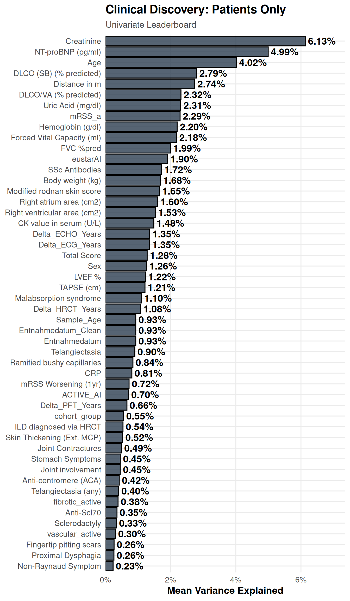
| Variable | Type | Mean_Variance | Missingness | N_Valid | Summary |
|---|---|---|---|---|---|
| Creatinine | Continuous | 6.13% | 4.2% | 92 | Mean: 76.47 | IQR: [61.75 - 85.25] |
| NT-proBNP (pg/ml) | Continuous | 4.99% | 0.0% | 96 | Mean: 315.81 | IQR: [56.50 - 284.75] |
| Age | Continuous | 4.02% | 0.0% | 96 | Mean: 60.39 | IQR: [48.00 - 71.25] |
| DLCO (SB) (% predicted) | Continuous | 2.79% | 3.1% | 93 | Mean: 62.88 | IQR: [49.00 - 77.00] |
| Distance in m | Continuous | 2.74% | 6.2% | 90 | Mean: 14604.96 | IQR: [510.00 - 45684.50] |
| DLCO/VA (% predicted) | Continuous | 2.32% | 5.2% | 91 | Mean: 74.80 | IQR: [65.50 - 87.50] |
| Uric Acid (mg/dl) | Continuous | 2.31% | 3.1% | 93 | Mean: 10.20 | IQR: [4.03 - 5.95] |
| mRSS_a | Continuous | 2.29% | 0.0% | 96 | Mean: 0.25 | IQR: [0.00 - 0.34] |
| Hemoglobin (g/dl) | Continuous | 2.20% | 1.0% | 95 | Mean: 13.02 | IQR: [12.00 - 14.20] |
| Forced Vital Capacity (ml) | Continuous | 2.18% | 4.2% | 92 | Mean: 3022.72 | IQR: [2455.00 - 3532.50] |
| FVC %pred | Continuous | 1.99% | 2.1% | 94 | Mean: 90.41 | IQR: [80.25 - 101.00] |
| eustarAI | Continuous | 1.90% | 0.0% | 96 | Mean: 1.67 | IQR: [0.00 - 2.84] |
| SSc Antibodies | Categorical | 1.72% | 1.0% | 95 | Levels: 2 | 0: 11.6%, 1: 88.4% |
| Body weight (kg) | Continuous | 1.68% | 5.2% | 91 | Mean: 68.86 | IQR: [55.00 - 78.50] |
| Modified rodnan skin score | Continuous | 1.65% | 0.0% | 96 | Mean: 3.23 | IQR: [0.00 - 4.00] |
| Right atrium area (cm2) | Continuous | 1.60% | 5.2% | 91 | Mean: 16.08 | IQR: [14.00 - 17.50] |
| Right ventricular area (cm2) | Continuous | 1.53% | 6.2% | 90 | Mean: 17.04 | IQR: [14.17 - 18.70] |
| CK value in serum (U/L) | Continuous | 1.48% | 1.0% | 95 | Mean: 99.20 | IQR: [60.00 - 113.50] |
| Delta_ECHO_Years | Continuous | 1.35% | 5.2% | 91 | Mean: -0.03 | IQR: [0.00 - 0.00] |
| Delta_ECG_Years | Continuous | 1.35% | 5.2% | 91 | Mean: 0.01 | IQR: [0.00 - 0.00] |
| Total Score | Continuous | 1.28% | 1.0% | 95 | Mean: 15.93 | IQR: [10.00 - 22.00] |
| Sex | Categorical | 1.26% | 0.0% | 96 | Levels: 2 | Female: 79.2%, Male: 20.8% |
| LVEF % | Continuous | 1.22% | 5.2% | 91 | Mean: 60.08 | IQR: [58.00 - 63.00] |
| TAPSE (cm) | Continuous | 1.21% | 9.4% | 87 | Mean: 2.09 | IQR: [1.70 - 2.10] |
| Malabsorption syndrome | Categorical | 1.10% | 4.2% | 92 | Levels: 2 | 0: 83.7%, 1: 16.3% |
| Delta_HRCT_Years | Continuous | 1.08% | 4.2% | 92 | Mean: -0.01 | IQR: [0.00 - 0.00] |
| Sample_Age | Continuous | 0.93% | 0.0% | 96 | Mean: 1.20 | IQR: [0.88 - 1.51] |
| Entnahmedatum | Categorical | 0.93% | 0.0% | 96 | Levels: 72 | 2024-06-24: 1.0%, 2024-06-26: 1.0%, 2024-07-03: 1.0%, …(more) |
| Entnahmedatum_Clean | Categorical | 0.93% | 0.0% | 96 | Levels: 72 | 2024-06-24: 1.0%, 2024-06-26: 1.0%, 2024-07-03: 1.0%, …(more) |
| Telangiectasia | Categorical | 0.90% | 1.0% | 95 | Levels: 2 | 0: 38.9%, 1: 61.1% |
| Ramified bushy capillaries | Categorical | 0.84% | 5.2% | 91 | Levels: 3 | Moderate: 14.3%, None: 22.0%, Rare: 63.7% |
| CRP | Continuous | 0.81% | 2.1% | 94 | Mean: 0.51 | IQR: [0.06 - 0.36] |
| mRSS Worsening (1yr) | Categorical | 0.72% | 9.4% | 87 | Levels: 2 | 0: 85.1%, 1: 14.9% |
| ACTIVE_AI | Categorical | 0.70% | 0.0% | 96 | Levels: 2 | 0: 65.6%, 1: 34.4% |
| Delta_PFT_Years | Continuous | 0.66% | 4.2% | 92 | Mean: -0.07 | IQR: [0.00 - 0.00] |
| cohort_group | Categorical | 0.55% | 0.0% | 96 | Levels: 2 | Active: 50.0%, Non-Active: 50.0% |
| ILD diagnosed via HRCT | Categorical | 0.54% | 3.1% | 93 | Levels: 2 | 0: 41.9%, 1: 58.1% |
| Skin Thickening (Ext. MCP) | Categorical | 0.52% | 1.0% | 95 | Levels: 2 | 0: 62.1%, 1: 37.9% |
| Joint Contractures | Categorical | 0.49% | 2.1% | 94 | Levels: 2 | 0: 67.0%, 1: 33.0% |
| Stomach Symptoms | Categorical | 0.45% | 3.1% | 93 | Levels: 2 | 0: 74.2%, 1: 25.8% |
| Joint involvement | Categorical | 0.45% | 1.0% | 95 | Levels: 2 | 0: 68.4%, 1: 31.6% |
| Anti-centromere (ACA) | Categorical | 0.42% | 4.2% | 92 | Levels: 2 | 0: 55.4%, 1: 44.6% |
| Telangiectasia (any) | Categorical | 0.40% | 0.0% | 96 | Levels: 2 | 0: 43.8%, 1: 56.2% |
| fibrotic_active | Categorical | 0.38% | 0.0% | 96 | Levels: 2 | 0: 65.6%, 1: 34.4% |
| Anti-Scl70 | Categorical | 0.35% | 4.2% | 92 | Levels: 2 | 0: 68.5%, 1: 31.5% |
| Sclerodactyly | Categorical | 0.33% | 7.3% | 89 | Levels: 2 | 0: 74.2%, 1: 25.8% |
| vascular_active | Categorical | 0.30% | 0.0% | 96 | Levels: 2 | 0: 53.1%, 1: 46.9% |
| Fingertip pitting scars | Categorical | 0.26% | 1.0% | 95 | Levels: 2 | 0: 50.5%, 1: 49.5% |
| Proximal Dysphagia | Categorical | 0.26% | 4.2% | 92 | Levels: 2 | 0: 87.0%, 1: 13.0% |
| Non-Raynaud Symptom | Categorical | 0.23% | 9.4% | 87 | Levels: 2 | 0: 20.7%, 1: 79.3% |
# Clean memory
rm(vpa_id, conf, res)
invisible(gc())PCA
- Executed the PCA pipeline to assess global cohort structure and identify potential outliers or batch effects.
- Generated scree plots to evaluate dimensional variance capture.
- Rendered and exported feature loadings and metadata-colored PCA overlays (e.g., by Cohort, Age, Sex).
cat("### Executing Principal Component Analysis...\n\n")Executing Principal Component Analysis…
# Process each PCA configuration through the Master Pipeline
for (pca_name in names(pca_configs)) {
pca_conf <- pca_configs[[pca_name]]
# CALL THE MASTER PIPELINE
pca_results <- wrap_pca_pipeline(
omics_mat = olink_mat,
clin_df = master_spine,
pca_conf = pca_conf,
pca_id = pca_name,
base_output_dir = output_dir_data,
project_colors_func = get_project_colors
)
# PRINT TO HTML REPORT
if (!interactive()) {
cat(sprintf("#### %s\n\n", pca_conf$title))
cat(sprintf("\n\n", pca_results$paths[["scree"]]))
cat(sprintf("\n\n", pca_results$paths[["loadings"]]))
cat(sprintf("\n\n", pca_results$paths[["merged_drivers"]]))
if (!is.null(pca_results$paths[["merged_overlays"]])) {
cat("#### Metadata Overlays (Side-by-Side Comparison Grid)\n\n")
subtitle_desc <- case_when(
is.null(pca_conf$subset_to_contrast) ~ "Showing: Global Cohort",
TRUE ~ pca_conf$title
)
cat(sprintf("> **Grid View for:** %s\n\n", subtitle_desc))
# Insert the already created master PNG
cat(sprintf("\n\n", pca_results$paths[["merged_overlays"]]))
}
} else {
# INTERACTIVE MODE: Print individual plots sequentially so they don't squash!
cat(sprintf("#### Interactive Viewer: %s\n\n", pca_conf$title))
print(pca_results$plots[["scree"]])
print(pca_results$plots[["loadings"]])
print(pca_results$plots[["merged_drivers"]])
# Loop through and print each overlay plot on its own
for (c_var in pca_conf$color_vars) {
plot_key <- paste0("PCA_Plot_", c_var)
if (!is.null(pca_results$plots[[plot_key]])) {
print(pca_results$plots[[plot_key]])
}
}
}
cat("---\n\n")
}PCA: Global Cohort Structure


Metadata Overlays (Side-by-Side Comparison Grid)
Grid View for: Showing: Global Cohort

PCA: Proposed DEA Variables (Active/Non-Active Only)


Metadata Overlays (Side-by-Side Comparison Grid)
Grid View for: PCA: Proposed DEA Variables (Active/Non-Active Only)

# Clean memory
rm(pca_name, pca_conf, pca_results, subtitle_desc, plot_key, c_var)
invisible(gc())Targeted Variance Partition Analysis
- Executed multivariate Variance Partition Analysis to model the combined influence of specific clinical variable sets.
- Calculated the unique percentage of proteomics variance explained by each variable while adjusting for the others.
- Outputted bar and violin plots to visualize the distribution of explained variance across all measured proteins.
for (vpa_id in names(targeted_vpa_configs)) {
conf <- targeted_vpa_configs[[vpa_id]]
cat(sprintf("#### Analysis: %s\n\n", conf$title))
res <- wrap_vpa_pipeline(
omics_mat = olink_mat,
clin_df = master_spine,
vpa_conf = conf,
vpa_id = vpa_id,
base_output_dir = output_dir_data
)
if(!is.null(res) && res$status == "success") {
print(res$plots$bar)
cat("\n\n")
print(res$plots$violin)
} else if (!is.null(res) && res$status == "failed") {
# Prints the exact reason the model was skipped
cat(sprintf("> <span style='color:red;'>**SKIPPED:** %s</span>\n", res$error_msg))
}
}Analysis: Potential DEA Model for: Active vs. Non-Active
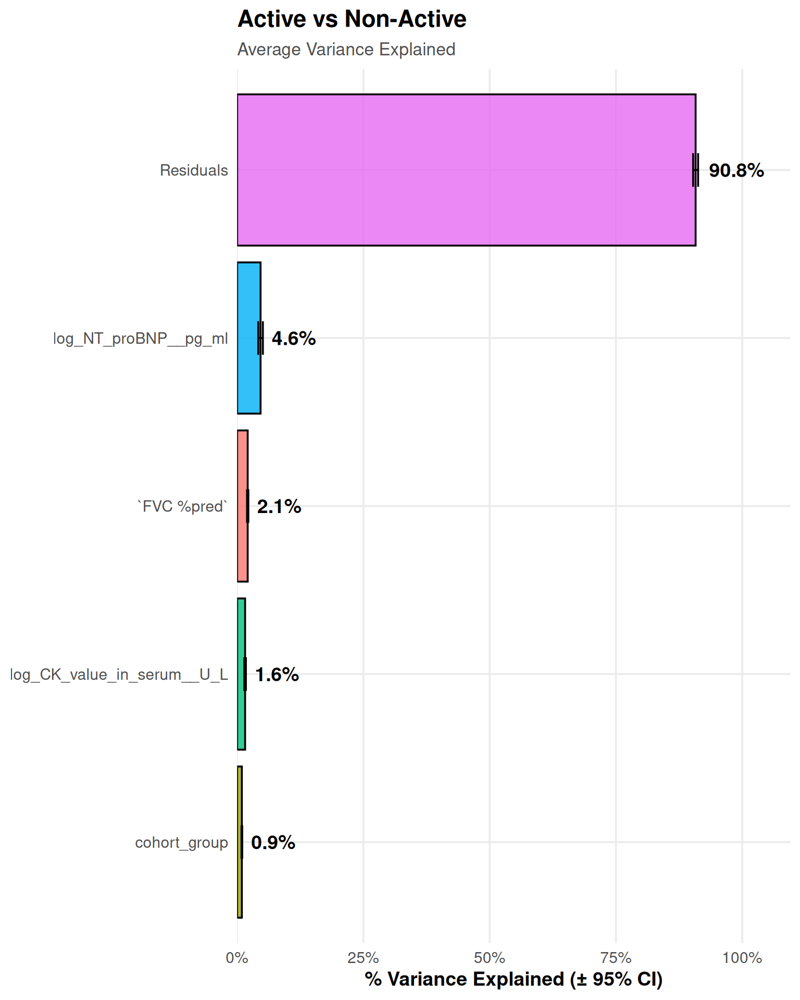
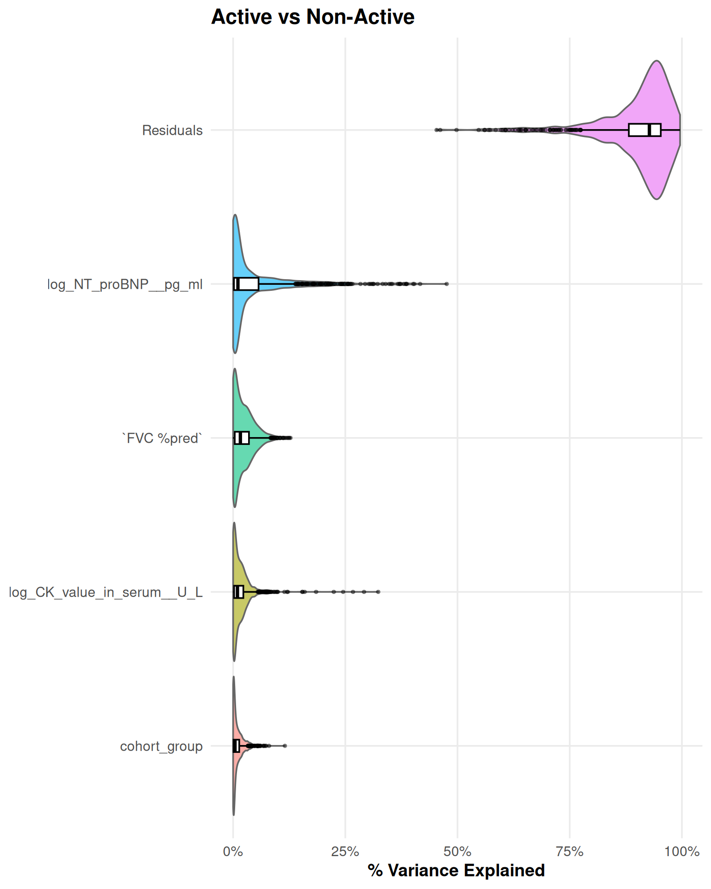
#### Analysis: Potential DEA Model for: Inflammed vs. Non-Inflammed SSc Patients
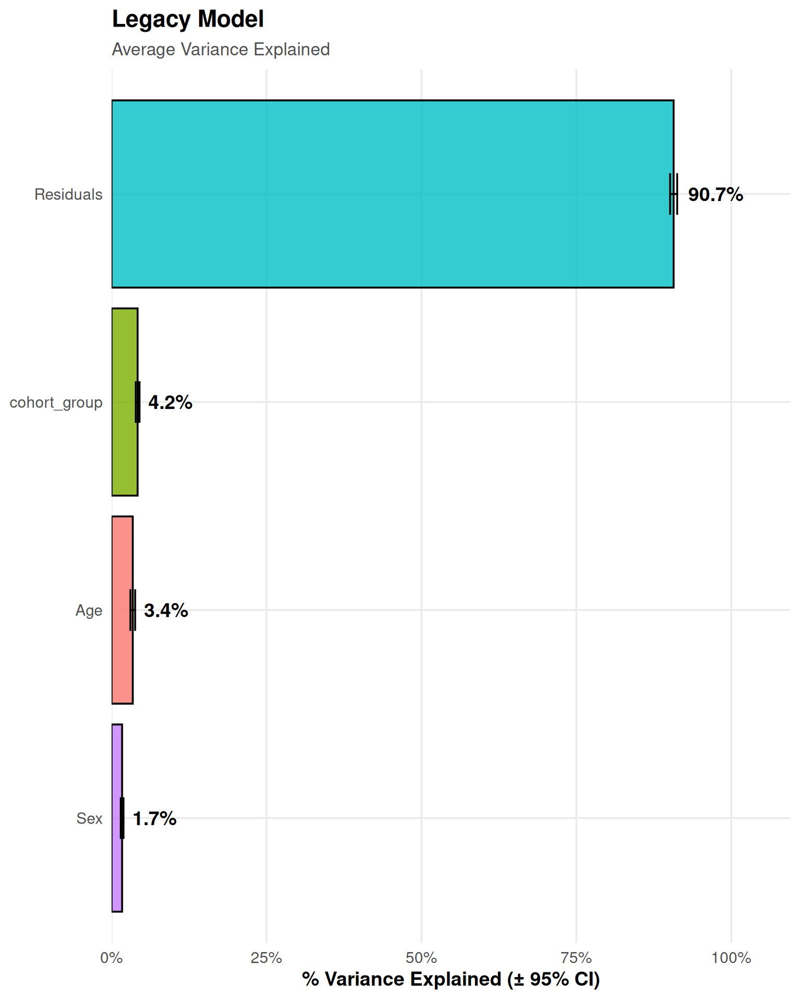
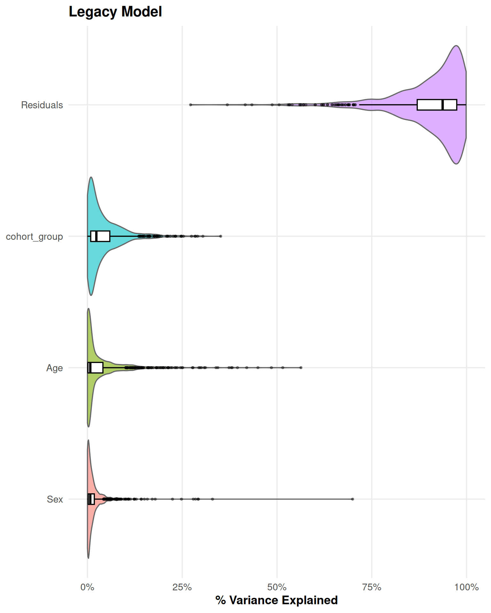
#### Analysis: Potential DEA Model for: Fibrotic vs. Non-Fibrotic SSc Patients
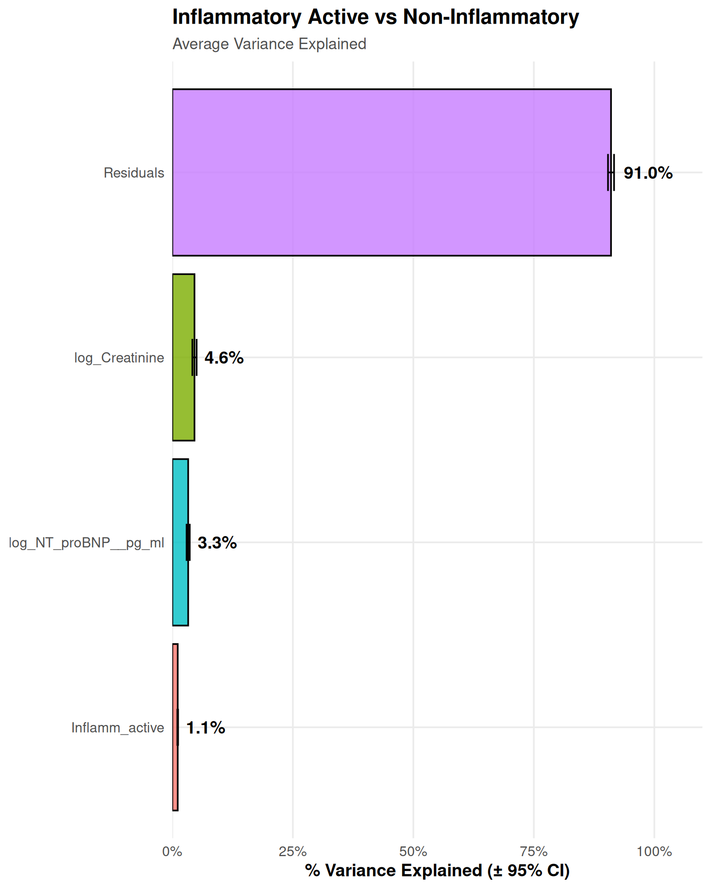
| Version | Author | Date |
|---|---|---|
| 2909df1 | alexander-gysin | 2026-04-16 |
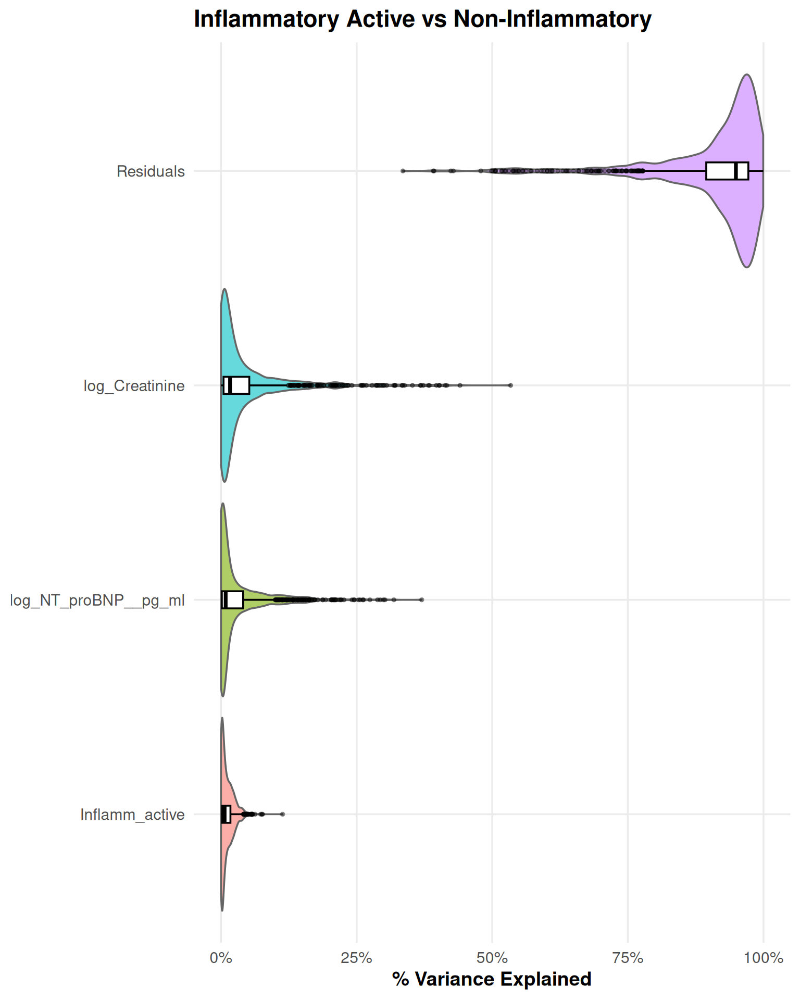
| Version | Author | Date |
|---|---|---|
| 2909df1 | alexander-gysin | 2026-04-16 |
#### Analysis: Potential DEA Model for: Vascular vs. Non-Vascular SSc Patients
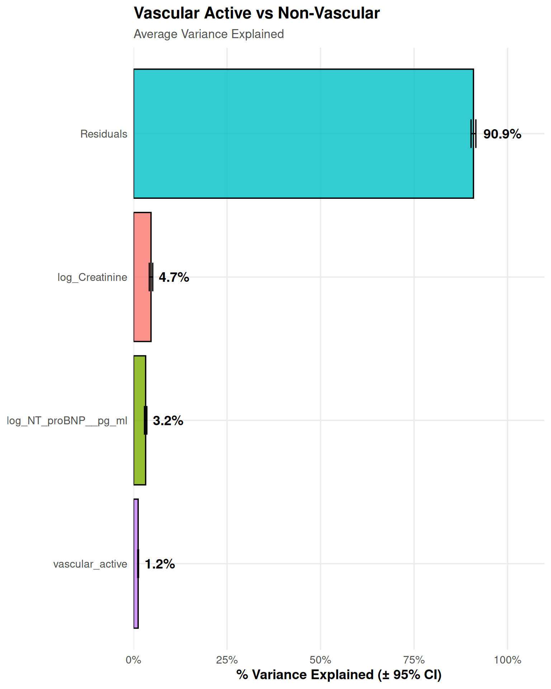
| Version | Author | Date |
|---|---|---|
| 2909df1 | alexander-gysin | 2026-04-16 |
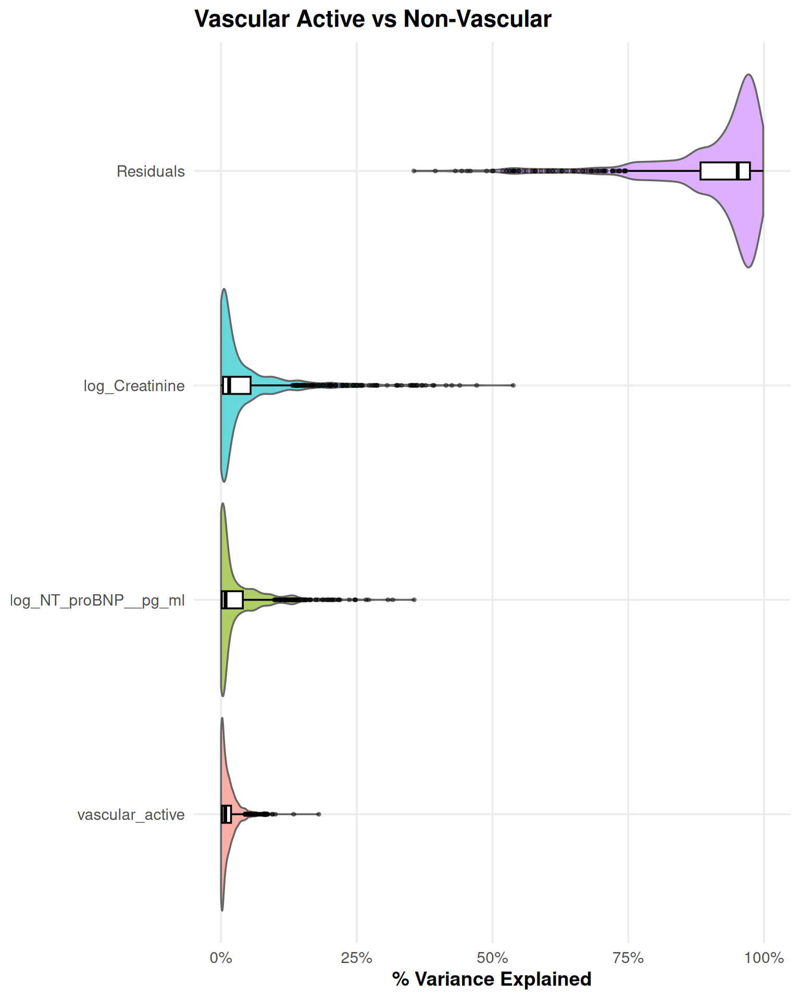
| Version | Author | Date |
|---|---|---|
| 2909df1 | alexander-gysin | 2026-04-16 |
#### Analysis: Potential DEA Model for: SSc vs. Control
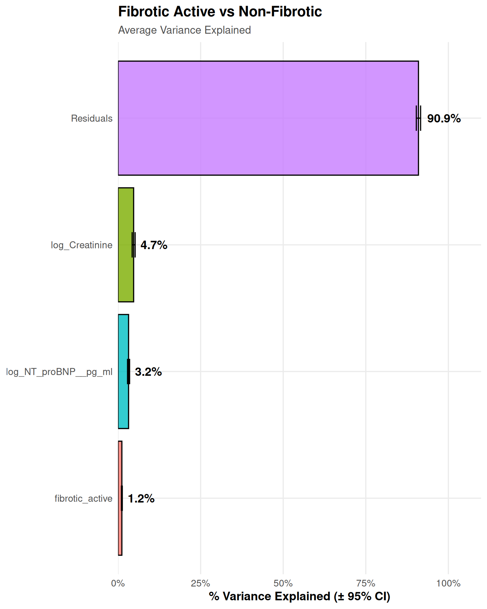
| Version | Author | Date |
|---|---|---|
| 2909df1 | alexander-gysin | 2026-04-16 |
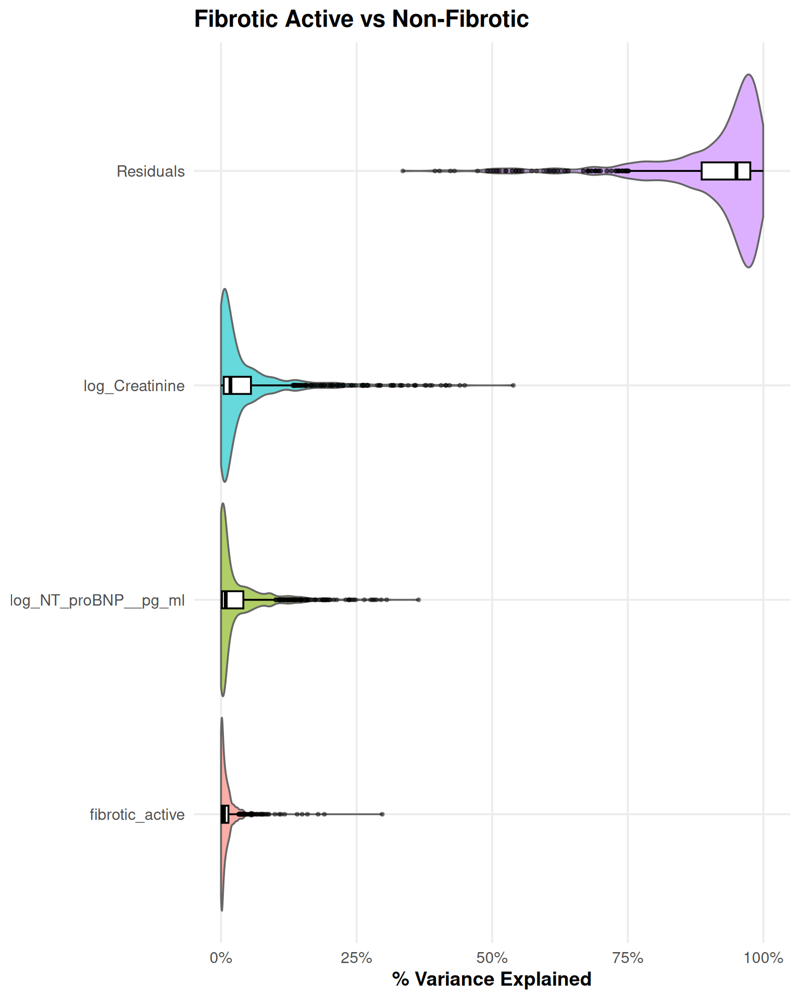
| Version | Author | Date |
|---|---|---|
| 2909df1 | alexander-gysin | 2026-04-16 |
# Clean memory
rm(vpa_id, conf, res)
invisible(gc())Pre-DEA Design Validation
- Enforced the clinical ‘Rule of 10’ (minimum 10 samples per parameter) for all DEA designs to mathematically prevent overfitting.
- Mandated a strict minimum of 2 surviving patients per contrast group to ensure valid standard error estimation in downstream limma models.
- Implemented automated exclusion for variables that collapse to zero variance or a single level after complete-case filtration.
- Evaluated linear independence via QR matrix decomposition to actively block collinear variables from entering the limma pipeline.
- Cross-referenced all covariates against the cohort Spearman correlation matrix to block Variance Inflation (rho >= 0.30, p <= 0.05).
- Tested proposed Differential Expression Analysis configurations against 5 mathematical pillars: Complete Case Survival, Variance Stability, Matrix Collinearity, Variance Inflation, and Statistical Power.
- Generated an integrated, variable-by-variable mathematical audit table for each proposed model to guide downstream DEA script configurations.
for (model_id in names(pre_dea_configs)) {
# Call the new wrapper engine
res <- wrap_pre_dea_validation(
clin_df = master_spine,
conf = pre_dea_configs[[model_id]],
rules = dea_validation_rules,
cor_matrices = clinical_correlations
)
# Intelligent Render Engine
if (interactive()) {
print(res$html_table)
} else {
cat(as.character(res$html_table))
}
cat("\n\n")
}| Variable | Role | N (Valid) | Missingness | Distribution (Median [IQR] or %) | High Correlation Warning |
|---|---|---|---|---|---|
| cohort_group | Contrast Group | 96 | 0.0% |
Active: 50.6% Non-Active: 49.4% |
None |
| Creatinine | Covariate | 92 | 4.2% | Med: 68.0 [61.0 - 83.0] | None |
| NT-proBNP (pg/ml) | Covariate | 96 | 0.0% | Med: 109.0 [57.0 - 287.0] | Yes (with DLCO (SB) (% predicted), ρ = -0.39, p = 0.000) |
| Age | Covariate | 96 | 0.0% | Med: 61.0 [48.0 - 71.0] | Yes (with NT-proBNP (pg/ml), ρ = 0.45, p = 0.000) |
| DLCO (SB) (% predicted) | Covariate | 93 | 3.1% | Med: 66.0 [49.0 - 77.0] | Yes (with NT-proBNP (pg/ml), ρ = -0.39, p = 0.000) |
Verdict: FAIL |
| Variable | Role | N (Valid) | Missingness | Distribution (Median [IQR] or %) | High Correlation Warning |
|---|---|---|---|---|---|
| Inflamm_active | Contrast Group | 96 | 0.0% |
0: 68.5% 1: 31.5% |
None |
| Creatinine | Covariate | 92 | 4.2% | Med: 68.0 [61.0 - 83.0] | None |
| NT-proBNP (pg/ml) | Covariate | 96 | 0.0% | Med: 109.0 [57.0 - 287.0] | Yes (with DLCO (SB) (% predicted), ρ = -0.39, p = 0.000) |
| Age | Covariate | 96 | 0.0% | Med: 61.0 [48.0 - 71.0] | Yes (with NT-proBNP (pg/ml), ρ = 0.45, p = 0.000) |
| DLCO (SB) (% predicted) | Covariate | 93 | 3.1% | Med: 66.0 [49.0 - 77.0] | Yes (with NT-proBNP (pg/ml), ρ = -0.39, p = 0.000) |
Verdict: FAIL |
| Variable | Role | N (Valid) | Missingness | Distribution (Median [IQR] or %) | High Correlation Warning |
|---|---|---|---|---|---|
| fibrotic_active | Contrast Group | 96 | 0.0% |
0: 65.2% 1: 34.8% |
None |
| Creatinine | Covariate | 92 | 4.2% | Med: 68.0 [61.0 - 83.0] | None |
| NT-proBNP (pg/ml) | Covariate | 96 | 0.0% | Med: 109.0 [57.0 - 287.0] | Yes (with DLCO (SB) (% predicted), ρ = -0.39, p = 0.000) |
| Age | Covariate | 96 | 0.0% | Med: 61.0 [48.0 - 71.0] | Yes (with NT-proBNP (pg/ml), ρ = 0.45, p = 0.000) |
| DLCO (SB) (% predicted) | Covariate | 93 | 3.1% | Med: 66.0 [49.0 - 77.0] | Yes (with NT-proBNP (pg/ml), ρ = -0.39, p = 0.000) |
Verdict: FAIL |
| Variable | Role | N (Valid) | Missingness | Distribution (Median [IQR] or %) | High Correlation Warning |
|---|---|---|---|---|---|
| vascular_active | Contrast Group | 96 | 0.0% |
0: 51.7% 1: 48.3% |
None |
| Creatinine | Covariate | 92 | 4.2% | Med: 68.0 [61.0 - 83.0] | None |
| NT-proBNP (pg/ml) | Covariate | 96 | 0.0% | Med: 109.0 [57.0 - 287.0] | Yes (with DLCO (SB) (% predicted), ρ = -0.39, p = 0.000) |
| Age | Covariate | 96 | 0.0% | Med: 61.0 [48.0 - 71.0] | Yes (with NT-proBNP (pg/ml), ρ = 0.45, p = 0.000) |
| DLCO (SB) (% predicted) | Covariate | 93 | 3.1% | Med: 66.0 [49.0 - 77.0] | Yes (with NT-proBNP (pg/ml), ρ = -0.39, p = 0.000) |
Verdict: FAIL |
| Variable | Role | N (Valid) | Missingness | Distribution (Median [IQR] or %) | High Correlation Warning |
|---|---|---|---|---|---|
| cohort_group | Contrast Group | 131 | 0.0% |
Active: 36.6% Non-Active: 36.6% Control: 26.7% |
None |
| Age | Covariate | 131 | 0.0% | Med: 61.0 [49.0 - 71.0] | None |
| Sex | Covariate | 131 | 0.0% |
Female: 79.4% Male: 20.6% |
None |
Verdict: PASS |
# Clean memory
rm(model_id, res)
invisible(gc())Appendix
- Appended the raw underlying R code from the custom omics engines to the HTML report’s appendix to ensure complete analytical transparency and reproducibility.
# OMICS ENGINES: High-Dimensional Analysis Functions ---------------------------
library(limma)
library(FactoMineR)
library(factoextra)
library(clusterProfiler)
library(enrichplot)
library(pheatmap)
library(ggrepel)
library(patchwork)
library(ggridges)
library(ComplexHeatmap)
library(UpSetR)
library(glmnet)
library(circlize)
library(ggVennDiagram)
library(variancePartition)
library(BiocParallel)
library(future)
library(future.apply)
# PART 1: THE MASTER PIPELINE WRAPPERS (The "Managers") ------------------------
# 1. PCA Pipeline Wrapper ------------------------------------------------------
# Description:
# Executes a complete Principal Component Analysis pipeline. It filters data,
# calculates PCA, and saves a suite of dynamically scaled visualizations to PNG,
# returning the ggplot objects and their direct file paths.
# Args:
# omics_mat: Numeric matrix (features in rows, subjects in columns).
# clin_df: Aligned clinical metadata dataframe.
# pca_conf: List of settings (title, subset_to_contrast, color_vars).
# pca_id: String identifier for saving outputs.
# base_output_dir: Path for saving results.
# project_colors_func: Function to map cohort specific hex codes.
# Returns:
# Nested list with 'plots' (ggplot objects) and 'paths' (string file paths).
wrap_pca_pipeline <- function(omics_mat, clin_df, pca_conf, pca_id, base_output_dir, project_colors_func) {
# Setup Directories
pca_base_dir <- file.path(base_output_dir, "PCA")
pca_sub_dir <- file.path(pca_base_dir, pca_id)
if (!dir.exists(pca_sub_dir)) dir.create(pca_sub_dir, recursive = TRUE)
# Data Filtering & Subset
if (!is.null(pca_conf$subset_to_contrast)) {
target_col <- pca_conf$subset_to_contrast$group_col
target_lvls <- pca_conf$subset_to_contrast$target_groups
clin_df <- clin_df %>% filter(!!sym(target_col) %in% target_lvls)
}
valid_barcodes <- intersect(colnames(omics_mat), clin_df$Subject_ID)
clin_df <- clin_df %>% filter(Subject_ID %in% valid_barcodes)
mat_sub <- omics_mat[, clin_df$Subject_ID, drop = FALSE]
# PCA Calculation
pca_res <- FactoMineR::PCA(t(mat_sub), scale.unit = TRUE, graph = FALSE)
plots <- list()
paths <- list() # Store paths for HTML rendering
# --- AESTHETIC REFACTOR: TITLE WRAPPING ---
# We wrap the main title at ~55 characters so it never overflows.
wrapped_main_title <- stringr::str_wrap(pca_conf$title, width = 55)
# Generate Individual Plots
plots[["scree"]] <- fviz_eig(pca_res, addlabels = TRUE) +
theme_project_base() +
labs(title = sprintf("%s: Variance Explained (Scree)", wrapped_main_title))
plots[["loadings"]] <- fviz_pca_var(pca_res, select.var = list(contrib = 30),
col.var = "contrib",
gradient.cols = c("#00AFBB", "#E7B800", "#FC4E07"),
repel = TRUE) +
theme_project_base() +
guides(colour = guide_colorbar(barwidth = unit(8, "cm"), barheight = unit(0.3, "cm"))) +
labs(title = sprintf("%s: PCA Loadings (Top 30)", wrapped_main_title))
plots[["pc1_drivers"]] <- fviz_contrib(pca_res, choice = "var", axes = 1, top = 10, fill = "grey30", color = "grey30") +
theme_project_base() + coord_flip() + labs(title = "Top PC1 Drivers")
plots[["pc2_drivers"]] <- fviz_contrib(pca_res, choice = "var", axes = 2, top = 10, fill = "grey30", color = "grey30") +
theme_project_base() + coord_flip() + labs(title = "Top PC2 Drivers")
# Variable Overlays (Individual and Merged)
overlay_plots_for_grid <- list()
for (c_var in pca_conf$color_vars) {
if (!(c_var %in% colnames(clin_df))) next
# --- AESTHETIC REFACTOR: SPLIT TITLE/SUBTITLE ---
# Failsafe: Replicate design decision for interactive viewing
interact_main_title <- stringr::str_wrap(pca_conf$title, width = 50)
interact_labs_list <- labs(title = interact_main_title, subtitle = paste("Colored by:", c_var))
clean_vec <- clin_df[[c_var]][!is.na(clin_df[[c_var]])]
if (length(clean_vec) == 0) next
# A. CONTINUOUS VARIABLE LOGIC (Reverted to Viridis from config)
if (is.numeric(clin_df[[c_var]])) {
cont_pal <- if(exists("FALLBACK_CONT_PALETTE")) FALLBACK_CONT_PALETTE else "viridis"
p <- fviz_pca_ind(pca_res, label = "none", col.ind = clin_df[[c_var]], legend.title = c_var) +
scale_color_viridis_c(option = cont_pal, na.value = "grey85") +
theme_project_base() + interact_labs_list
# B. CATEGORICAL VARIABLE LOGIC
} else {
clin_df[[c_var]] <- as.factor(clin_df[[c_var]])
lvl_names <- levels(clin_df[[c_var]])
mapped_colors <- project_colors_func(lvl_names)
if (all(mapped_colors == "#333333")) {
safe_pal <- if(exists("FALLBACK_CAT_PALETTE")) FALLBACK_CAT_PALETTE else c("#E69F00", "#56B4E9", "#009E73", "#D55E00", "#CC79A7", "#0072B2", "#F0E442", "#999999")
if (length(lvl_names) <= length(safe_pal)) {
mapped_colors <- safe_pal[1:length(lvl_names)]
} else {
mapped_colors <- colorRampPalette(safe_pal)(length(lvl_names))
}
}
p <- fviz_pca_ind(pca_res, label = "none", habillage = clin_df[[c_var]],
palette = mapped_colors,
addEllipses = TRUE) +
theme_project_base() + interact_labs_list
}
plots[[paste0("PCA_Plot_", c_var)]] <- p
# Grid Title Setup (Cleaner than interactive viewer)
overlay_plots_for_grid[[c_var]] <- p + labs(title = wrapped_main_title, subtitle = paste("Colored by:", c_var))
}
# Automated Saving (With filename sanitization)
for (p_name in names(plots)) {
# Sanitize to prevent '%' crashes
safe_p_name <- gsub("%", "pct", p_name)
safe_p_name <- gsub("[^A-Za-z0-9_.-]", "_", safe_p_name)
safe_p_name <- gsub("_+", "_", safe_p_name)
file_path <- file.path(pca_sub_dir, paste0(pca_id, "_", safe_p_name, ".png"))
ggsave(filename = file_path, plot = plots[[p_name]], width = 7, height = 6, dpi = 300, bg = "white")
paths[[p_name]] <- file_path # Store path
}
# Stitch & Save Merged Drivers
driver_grid <- (plots[["pc1_drivers"]] | plots[["pc2_drivers"]]) +
plot_annotation(title = sprintf("%s: PCA Variance Drivers", wrapped_main_title),
tag_levels = 'A', theme = theme(plot.title = element_text(size = 16, face = "bold")))
driver_path <- file.path(pca_sub_dir, paste0(pca_id, "_Merged_Drivers.png"))
ggsave(driver_path, driver_grid, width = 12, height = 6, dpi = 300, bg="white")
plots[["merged_drivers"]] <- driver_grid
paths[["merged_drivers"]] <- driver_path
# Stitch & Save Merged Overlays (Dynamic height!)
if (length(overlay_plots_for_grid) > 0) {
ncol_val <- if(length(overlay_plots_for_grid) > 2) 2 else 1
master_scatter_grid <- wrap_plots(overlay_plots_for_grid, ncol = ncol_val) +
plot_annotation(title = wrapped_main_title, subtitle = "Hierarchical Grid: Metadata Colored Overlays",
tag_levels = 'A', theme = theme(plot.title = element_text(size = 18, face = "bold")))
overlay_path <- file.path(pca_sub_dir, paste0(pca_id, "_Merged_Scatter_Overlays.png"))
# Calculation handles odd number of plots gracefully
ggsave(overlay_path, master_scatter_grid,
width = 14, height = (6 * ceiling(length(overlay_plots_for_grid)/2)), dpi = 300, bg="white")
plots[["merged_overlays"]] <- master_scatter_grid
paths[["merged_overlays"]] <- overlay_path
}
return(list(plots = plots, paths = paths))
}
# 2. DEA & Discovery Pipeline Wrapper ------------------------------------------
# Description:
# Orchestrates the entire Differential Expression Analysis (DEA) workflow.
# It cleans the data, runs the Limma engine for significance, generates Volcano
# plots, extracts top features for a Heatmap, and performs GSEA pathway analysis.
# Args:
# omics_mat: Cleaned omics matrix.
# clin_df: Clinical metadata dataframe.
# dea_conf: List with contrast details (groups, covariates, cutoffs).
# dea_id: String identifier for this run.
# base_output_dir: Path for saving outputs.
# go_db: Gene Ontology/Pathway database object for GSEA.
# omics_config: Global config settings (p-value cutoffs, min set size).
# heatmap_config: Settings for heatmap rendering.
# project_colors_func: Function for cohort color mapping.
# Returns:
# A nested list containing 'status', 'plots', 'tables', and 'data'.
wrap_dea_pipeline <- function(omics_mat, clin_df, dea_conf, dea_id, base_output_dir,
go_db, omics_config, heatmap_config, project_colors_func) {
results <- list(status = "success", plots = list(), tables = list(), data = list())
# Setup Directories
dea_base_dir <- file.path(base_output_dir, "DEA")
dea_sub_dir <- file.path(dea_base_dir, dea_id)
if (!dir.exists(dea_sub_dir)) dir.create(dea_sub_dir, recursive = TRUE)
# Pre-flight: Diagnostic Filtering
if("Sample_Age" %in% colnames(clin_df)) clin_df$Sample_Age <- as.numeric(clin_df$Sample_Age)
req_cols <- c(dea_conf$group_col, dea_conf$covariates)
available_cols <- intersect(req_cols, colnames(clin_df))
clin_sub <- clin_df %>%
filter(!!sym(dea_conf$group_col) %in% c(dea_conf$target_groups, dea_conf$ref_groups)) %>%
drop_na(all_of(available_cols))
n_target <- sum(clin_sub[[dea_conf$group_col]] %in% dea_conf$target_groups)
n_ref <- sum(clin_sub[[dea_conf$group_col]] %in% dea_conf$ref_groups)
results$diagnostics <- list(n_target = n_target, n_ref = n_ref)
if(n_target < 2 || n_ref < 2) {
results$status <- "failed"
results$error_msg <- sprintf("Too few samples after NA filter (%d T vs %d R)", n_target, n_ref)
return(results)
}
# Execution Phase
# A. Limma DEA
limma_res <- run_limma_engine(omics_mat, clin_df, dea_conf, project_colors_func)
if (is.null(limma_res)) {
results$status <- "failed"; results$error_msg <- "Limma engine failed"; return(results)
}
results$data$dea <- limma_res$data
results$plots$volcano <- limma_res$volcano
write_csv(limma_res$data, file.path(dea_sub_dir, paste0(dea_id, "_DEA_Full_Results.csv")))
ggsave(file.path(dea_sub_dir, paste0(dea_id, "_Volcano.png")), limma_res$volcano, width = 8, height = 7, dpi=300)
# B. Significant Table extraction
sig_table <- limma_res$data %>%
filter(Significance != "Not Significant") %>%
select(Feature, logFC, adj.P.Val, Significance) %>%
arrange(adj.P.Val)
results$tables$significant_proteins <- sig_table
write_csv(sig_table, file.path(dea_sub_dir, paste0(dea_id, "_Significant_Proteins.csv")))
# C. Heatmap
results$plots$heatmap <- run_heatmap_engine(omics_mat, clin_sub, limma_res$data,
title = dea_conf$title,
n_top = heatmap_config$top_n,
split_by_group = heatmap_config$split_by_group)
png(file.path(dea_sub_dir, paste0(dea_id, "_Heatmap_Top", heatmap_config$top_n, ".png")),
width=10, height=12, units="in", res=300)
draw(results$plots$heatmap); dev.off()
# D. GSEA
gsea_res <- run_gsea_engine(limma_res$data, go_db, omics_config, dea_conf$title)
if (!is.null(gsea_res)) {
results$data$gsea <- gsea_res$data
results$plots$gsea_dotplot <- gsea_res$dotplot
results$plots$gsea_ridge <- gsea_res$ridgeplot
write_csv(gsea_res$data, file.path(dea_sub_dir, paste0(dea_id, "_GSEA_Results.csv")))
ggsave(file.path(dea_sub_dir, paste0(dea_id, "_GSEA_Dotplot.png")), gsea_res$dotplot, width = 9, height = 7, dpi=300)
if(!is.null(gsea_res$ridgeplot)) {
ggsave(file.path(dea_sub_dir, paste0(dea_id, "_GSEA_Ridgeplot.png")), gsea_res$ridgeplot, width = 9, height = 8, dpi=300)
}
}
return(results)
}
# 3. Trajectory Mapping Pipeline Wrapper ---------------------------------------
# Description:
# Takes the outputs of two different DEA contrasts (e.g., A vs C and B vs C)
# and intersects them to find shared and specific biological drivers. Generates
# 4-quadrant scatter plots for proteins and pathways, plus a Venn diagram.
# Args:
# cross_conf: Config specifying which two contrasts to compare.
# cross_id: String identifier for this trajectory analysis.
# master_dea: Named list of previously generated DEA results.
# master_gsea: Named list of previously generated GSEA results.
# contrast_configs: Metadata definitions of the original contrasts.
# base_output_dir: Root directory for saving results.
# project_colors_func: Color mapping function.
# highlight_color: Color to use for "Shared" significant features.
# omics_config: Global config settings.
# Returns:
# A list of combined multi-contrast plots (trajectory, venn, pathways).
wrap_trajectory_pipeline <- function(cross_conf, cross_id, master_dea, master_gsea,
contrast_configs, base_output_dir,
project_colors_func, highlight_color, omics_config) {
results <- list(plots = list(), status = "success")
# Fetch Source Data & Setup Labels
dea_x <- master_dea[[cross_conf$x_axis_contrast]]
dea_y <- master_dea[[cross_conf$y_axis_contrast]]
gsea_x <- master_gsea[[cross_conf$x_axis_contrast]]
gsea_y <- master_gsea[[cross_conf$y_axis_contrast]]
if (is.null(dea_x) || is.null(dea_y)) {
results$status <- "failed"; results$error_msg <- "Source DEA results missing"; return(results)
}
name_x <- contrast_configs[[cross_conf$x_axis_contrast]]$title
name_y <- contrast_configs[[cross_conf$y_axis_contrast]]$title
vs_label <- sprintf("%s VS %s", name_x, name_y)
color_x <- project_colors_func(contrast_configs[[cross_conf$x_axis_contrast]]$target_groups[1])
color_y <- project_colors_func(contrast_configs[[cross_conf$y_axis_contrast]]$target_groups[1])
traj_sub_dir <- file.path(base_output_dir, "Trajectories", cross_id)
if (!dir.exists(traj_sub_dir)) dir.create(traj_sub_dir, recursive = TRUE)
# A. PROTEIN TRAJECTORY
results$plots$protein_trajectory <- run_cross_contrast_engine(
dea_x, dea_y, cross_conf, name_x, name_y, color_x, color_y, highlight_color,
title = paste("Protein Trajectory:", vs_label)
)
if(!is.null(results$plots$protein_trajectory)) {
ggsave(file.path(traj_sub_dir, paste0(cross_id, "_Protein_Trajectory.png")),
results$plots$protein_trajectory, width=9, height=9, dpi=300, bg="white")
}
# B. VENN DIAGRAM
sig_x <- dea_x %>% filter(Significance != "Not Significant") %>% pull(Feature)
sig_y <- dea_y %>% filter(Significance != "Not Significant") %>% pull(Feature)
venn_data <- list(only_x = length(setdiff(sig_x, sig_y)),
only_y = length(setdiff(sig_y, sig_x)),
shared = length(intersect(sig_x, sig_y)))
if(sum(unlist(venn_data)) > 0) {
theta <- seq(0, 2 * pi, length.out = 100)
p_venn <- ggplot() +
geom_polygon(data = data.frame(x = -0.5 + cos(theta), y = sin(theta)), aes(x, y), fill = color_x, alpha = 0.3, color = color_x, linewidth = 1.2) +
geom_polygon(data = data.frame(x = 0.5 + cos(theta), y = sin(theta)), aes(x, y), fill = color_y, alpha = 0.3, color = color_y, linewidth = 1.2) +
annotate("text", x = -0.6, y = 1.3, label = name_x, size = 4.5, fontface = "bold", color = color_x) +
annotate("text", x = 0.6, y = 1.3, label = name_y, size = 4.5, fontface = "bold", color = color_y) +
annotate("text", x = -0.9, y = 0, label = venn_data$only_x, size = 6, fontface = "bold") +
annotate("text", x = 0.9, y = 0, label = venn_data$only_y, size = 6, fontface = "bold") +
annotate("text", x = 0, y = 0, label = venn_data$shared, size = 7, fontface = "bold") +
theme_void() + coord_fixed(clip = "off", xlim = c(-1.8, 1.8), ylim = c(-1.5, 1.5)) +
labs(title = paste("DEA Venn:", vs_label)) +
theme(plot.title = element_text(hjust = 0.5, face = "bold", size = rel(1.4)))
results$plots$venn <- p_venn
ggsave(file.path(traj_sub_dir, paste0(cross_id, "_Venn_Intersection.png")), p_venn, width=8, height=6, dpi=300, bg="white")
}
# C. PATHWAY TRAJECTORY
if (!is.null(gsea_x) && !is.null(gsea_y)) {
p_cutoff <- omics_config$gsea_p_cutoff
rank_var <- if(!is.null(cross_conf$pathway_rank_var)) cross_conf$pathway_rank_var else "p.adjust"
n_per_quad <- if(!is.null(cross_conf$top_n_pathways)) cross_conf$top_n_pathways else 10
merged_gsea <- inner_join(
gsea_x %>% select(Description, NES_X = NES, p_X = p.adjust),
gsea_y %>% select(Description, NES_Y = NES, p_Y = p.adjust),
by = "Description"
) %>% mutate(
Sig_X = p_X < p_cutoff, Sig_Y = p_Y < p_cutoff,
Signature = case_when(Sig_X & Sig_Y ~ "Shared Drivers", Sig_X & !Sig_Y ~ sprintf("%s Specific", name_x), !Sig_X & Sig_Y ~ sprintf("%s Specific", name_y), TRUE ~ "Not Significant"),
Quadrant = case_when(NES_X > 0 & NES_Y > 0 ~ "Up-Up", NES_X < 0 & NES_Y < 0 ~ "Down-Down", NES_X > 0 & NES_Y < 0 ~ "Up-Down", NES_X < 0 & NES_Y > 0 ~ "Down-Up", TRUE ~ "None"),
rank_score = (p_X + p_Y)
)
top_paths <- merged_gsea %>%
filter(Signature != "Not Significant") %>%
group_by(Quadrant) %>%
slice_min(order_by = !!sym(rank_var), n = n_per_quad, with_ties = FALSE) %>%
ungroup()
method_caption <- sprintf("Top %d pathways per quadrant selected by lowest %s (Significant in at least one contrast).", n_per_quad, rank_var)
color_map <- setNames(c("black", color_x, color_y), c("Shared Drivers", sprintf("%s Specific", name_x), sprintf("%s Specific", name_y)))
p_path <- ggplot(merged_gsea, aes(x = NES_X, y = NES_Y)) +
geom_abline(slope = 1, intercept = 0, linetype = "dashed", color = "grey60") +
geom_vline(xintercept = 0, color = "grey40") + geom_hline(yintercept = 0, color = "grey40") +
geom_point(aes(color = Signature), alpha = 0.5, size = 2) +
geom_text_repel(data = top_paths, aes(label = Description), size = 3, color = "black", box.padding = 0.5, max.overlaps = Inf) +
scale_color_manual(values = color_map) +
theme_project_base() +
labs(title = str_wrap(paste("Pathway Trajectory:", vs_label), 60),
x = paste(name_x, "(NES)"), y = paste(name_y, "(NES)"),
caption = method_caption)
results$plots$pathway_trajectory <- p_path
ggsave(file.path(traj_sub_dir, paste0(cross_id, "_Pathway_Trajectory.png")), p_path, width=11, height=9, dpi=300, bg="white")
}
return(results)
}
# 4. Predictive Modeling Pipeline Wrapper --------------------------------------
# Description:
# Sets up a penalized logistic regression (LASSO) using glmnet. This wrapper
# filters the cohorts to a binary classification task, runs cross-validation
# to find the optimal lambda, and extracts the features with non-zero weights.
# Args:
# omics_mat: Cleaned omics matrix.
# clin_df: Clinical metadata dataframe.
# lasso_conf: Target column and the two groups to classify.
# model_id: String identifier for saving outputs.
# base_output_dir: Path for saving results.
# Returns:
# List containing the CV curve plot, the coefficients bar chart, and weight data.
wrap_predictive_pipeline <- function(omics_mat, clin_df, lasso_conf, model_id, base_output_dir) {
results <- list(status = "success", plots = list(), data = list())
# Setup Directories
pred_base_dir <- file.path(base_output_dir, "LASSO_Models")
pred_sub_dir <- file.path(pred_base_dir, model_id)
if (!dir.exists(pred_sub_dir)) dir.create(pred_sub_dir, recursive = TRUE)
# Run LASSO Engine
lasso_res <- run_lasso_engine(omics_mat, clin_df, lasso_conf$group_col,
lasso_conf$target_groups, title = lasso_conf$title)
if (is.null(lasso_res)) {
results$status <- "failed"; results$error_msg <- "Model failed to converge or insufficient groups."; return(results)
}
# Package Results
results$data$lasso <- lasso_res$data
results$plots$lasso_cv <- lasso_res$cv_plot
results$plots$lasso_weights <- lasso_res$coeff_plot
# Automated Saving
write_csv(lasso_res$data, file.path(pred_sub_dir, paste0(model_id, "_LASSO_Coefficients.csv")))
png(file.path(pred_sub_dir, paste0(model_id, "_LASSO_CV.png")), width=7, height=6, units="in", res=300)
plot(lasso_res$cv_plot); title(main = sprintf("%s: LASSO Tuning", lasso_conf$title), line = 2.5); dev.off()
ggsave(file.path(pred_sub_dir, paste0(model_id, "_LASSO_Weights.png")), lasso_res$coeff_plot, width=7, height=6, dpi=300, bg="white")
return(results)
}
# 5a. Joint VPA Wrapper --------------------------------------------------------
wrap_vpa_pipeline <- function(omics_mat, clin_df, vpa_conf, vpa_id, base_output_dir, top_n_plot = 30) {
results <- list(status = "success", plots = list(), data = list())
vpa_sub_dir <- file.path(base_output_dir, "VPA_Joint", vpa_id)
if (!dir.exists(vpa_sub_dir)) dir.create(vpa_sub_dir, recursive = TRUE)
min_minority <- if(!is.null(vpa_conf$min_minority_pct)) vpa_conf$min_minority_pct else 0.10
# 1. Variable Safety Checks
existing_vars <- intersect(vpa_conf$variables, colnames(clin_df))
if(length(existing_vars) == 0) return(list(status = "failed", error_msg = "No matching variables found."))
# 2. Align Data, Purge NAs, and Scale Numerics
clin_sub <- clin_df %>%
select(Subject_ID, any_of(existing_vars)) %>%
drop_na() %>%
droplevels() %>%
mutate(across(where(is.numeric), ~ as.numeric(scale(.))))
valid_ids <- intersect(colnames(omics_mat), clin_sub$Subject_ID)
clin_sub <- clin_sub %>% filter(Subject_ID %in% valid_ids)
if (nrow(clin_sub) < 15) {
return(list(status = "failed", error_msg = sprintf("NA-Wipeout: Only %d patients remained after requiring complete cases.", nrow(clin_sub))))
}
# 3. Build Formula & Protect Against Ghost Levels + Class Imbalance
formula_terms <- sapply(existing_vars, function(v) {
if ((is.factor(clin_sub[[v]]) || is.character(clin_sub[[v]])) && length(unique(clin_sub[[v]])) < 2) {
return(NULL)
}
is_categorical <- is.factor(clin_sub[[v]]) || is.character(clin_sub[[v]]) || is.logical(clin_sub[[v]])
if (is_categorical) {
tbl <- prop.table(table(clin_sub[[v]]))
if (length(tbl) < 2 || min(tbl) < min_minority) return(NULL)
}
num_levels <- length(unique(clin_sub[[v]]))
if (is_categorical && num_levels >= 5) {
paste0("(1|`", v, "`)")
} else {
paste0("`", v, "`")
}
})
formula_terms <- formula_terms[!sapply(formula_terms, is.null)]
if(length(formula_terms) == 0) return(list(status="failed", error_msg="All variables had zero variance or extreme imbalance."))
vpa_formula <- as.formula(paste("~", paste(formula_terms, collapse = " + ")))
# 4. Execution (PARALLELIZED ACROSS 4 CORES)
res_varPart <- tryCatch({
fitExtractVarPartModel(omics_mat[, valid_ids], vpa_formula, clin_sub, BPPARAM = SnowParam(workers = 4))
}, error = function(e) return(e$message))
if (is.character(res_varPart)) {
return(list(status = "failed", error_msg = res_varPart))
}
# 5. Process & Plot
varPart_df <- as.data.frame(res_varPart) %>% rownames_to_column("Feature")
summary_df <- data.frame(
Covariate = colnames(res_varPart),
Mean_Var = colMeans(res_varPart, na.rm = TRUE),
SEM = apply(res_varPart, 2, sd, na.rm = TRUE) / sqrt(nrow(res_varPart))
) %>%
mutate(CI_upper = pmin(1, Mean_Var + (1.96 * SEM))) %>%
arrange(desc(Mean_Var))
plot_summary <- head(summary_df, top_n_plot)
p_bar <- ggplot(plot_summary, aes(x = reorder(Covariate, Mean_Var), y = Mean_Var, fill = Covariate)) +
geom_bar(stat = "identity", color = "black", alpha = 0.8) +
geom_errorbar(aes(ymin = pmax(0, Mean_Var - (1.96 * SEM)), ymax = CI_upper), width = 0.2) +
geom_text(aes(y = CI_upper, label = sprintf("%.1f%%", Mean_Var * 100)), hjust = -0.2, fontface = "bold") +
coord_flip() + scale_y_continuous(labels = scales::percent, expand = expansion(mult = c(0, 0.2))) +
theme_project_base() + theme(legend.position = "none") +
labs(title = vpa_conf$title, subtitle = "Average Variance Explained", y = "% Variance Explained (± 95% CI)", x = NULL)
long_var <- varPart_df %>%
select(Feature, all_of(plot_summary$Covariate)) %>%
pivot_longer(-Feature, names_to = "Covariate", values_to = "Val") %>%
mutate(Covariate = factor(Covariate, levels = rev(plot_summary$Covariate)))
p_violin <- ggplot(long_var, aes(x = Covariate, y = Val, fill = Covariate)) +
geom_violin(alpha = 0.6, color = "grey40", scale = "width") +
geom_boxplot(width = 0.08, fill = "white", color = "black", outlier.shape = 19, outlier.size = 1, outlier.alpha = 0.4) +
coord_flip() + scale_y_continuous(labels = scales::percent) +
theme_project_base() + theme(legend.position = "none") +
labs(title = vpa_conf$title, x = NULL, y = "% Variance Explained")
# 6. Package Results
results$plots <- list(bar = p_bar, violin = p_violin)
results$data <- varPart_df
readr::write_csv(varPart_df, file.path(vpa_sub_dir, paste0(vpa_id, "_Joint_VPA_Results.csv")))
ggsave(file.path(vpa_sub_dir, paste0(vpa_id, "_Bar.png")), p_bar, width = 8, height = max(6, nrow(plot_summary)*0.3), bg="white")
return(results)
}
# 5b. Univariate VPA Scan Wrapper ----------------------------------------------
wrap_vpa_univariate_pipeline <- function(omics_mat, clin_df, vpa_conf, vpa_id, base_output_dir) {
# Setup Directories
vpa_sub_dir <- file.path(base_output_dir, "VPA_Univariate", vpa_id)
if (!dir.exists(vpa_sub_dir)) dir.create(vpa_sub_dir, recursive = TRUE)
if (!is.null(vpa_conf$subset_to_groups)) {
clin_df <- clin_df %>% filter(cohort_group %in% vpa_conf$subset_to_groups) %>% droplevels()
}
# EXCLUSION LOGGER & FILTERING
all_cols <- setdiff(colnames(clin_df), "Subject_ID")
vip_vars <- if(!is.null(vpa_conf$include_vars)) intersect(all_cols, vpa_conf$include_vars) else c()
excl_log <- list()
# 1. Exact Match Exclusions (No details needed)
exact_excl <- setdiff(intersect(all_cols, vpa_conf$exclude_vars), vip_vars)
if(length(exact_excl) > 0) {
excl_log[["Exact Match (Blacklist)"]] <- exact_excl
all_cols <- setdiff(all_cols, exact_excl)
}
# 2. Missingness, Variance, & Imbalance Exclusions (With Detailed Metrics)
min_minority <- if(!is.null(vpa_conf$min_minority_pct)) vpa_conf$min_minority_pct else 0.10
miss_excl <- c(); var_excl <- c(); imbalance_excl <- c(); surviving_cols <- c()
for(v in all_cols) {
if (v %in% vip_vars) {
surviving_cols <- c(surviving_cols, v)
next
}
vec <- clin_df[[v]]
clean_vec <- vec[!is.na(vec)]
miss_pct <- sum(is.na(vec)) / length(vec)
# A. Missingness Filter
if (miss_pct > vpa_conf$missingness_cutoff) {
miss_excl <- c(miss_excl, sprintf("%s (%.1f%%)", v, miss_pct * 100))
# B. Zero/Low Variance Filter
} else if (length(unique(clean_vec)) < 2) {
if (length(clean_vec) < 2) {
var_excl <- c(var_excl, sprintf("%s (N < 2)", v))
} else if (is.numeric(clean_vec)) {
# Numeric variance is 0
var_excl <- c(var_excl, sprintf("%s (Var: 0)", v))
} else {
# Categorical has only 1 level
var_excl <- c(var_excl, sprintf("%s (<2 levels)", v))
}
# C. Extreme Imbalance Filter (Categorical only)
} else if (is.factor(clean_vec) || is.character(clean_vec) || is.logical(clean_vec)) {
props <- prop.table(table(clean_vec))
min_prop <- min(props)
min_level_name <- names(props)[which.min(props)]
if (min_prop < min_minority) {
imbalance_excl <- c(imbalance_excl, sprintf("%s (%s: %.1f%%)", v, min_level_name, min_prop * 100))
} else {
surviving_cols <- c(surviving_cols, v)
}
# Passed all filters
} else {
surviving_cols <- c(surviving_cols, v)
}
}
if(length(miss_excl) > 0) excl_log[[sprintf("Missing > %s%%", vpa_conf$missingness_cutoff*100)]] <- miss_excl
if(length(var_excl) > 0) excl_log[["Zero/Low Variance (<2 unique)"]] <- var_excl
if(length(imbalance_excl) > 0) excl_log[[sprintf("Extreme Imbalance (< %s%% in minority class)", min_minority*100)]] <- imbalance_excl
all_cols <- surviving_cols
# 3. Partial Match Exclusions (No details needed)
if(!is.null(vpa_conf$exclude_patterns)) {
pat_excl <- c()
for(pat in vpa_conf$exclude_patterns) {
pat_excl <- c(pat_excl, grep(pat, all_cols, fixed = TRUE, value = TRUE))
}
pat_excl <- setdiff(unique(pat_excl), vip_vars)
if(length(pat_excl) > 0) {
excl_log[["Pattern Match (Substring)"]] <- pat_excl
all_cols <- setdiff(all_cols, pat_excl)
}
}
cols_to_scan <- all_cols
if(length(cols_to_scan) == 0) return(NULL)
excl_df <- data.frame(Reason = character(), Variables = character(), stringsAsFactors = FALSE)
for(reason in names(excl_log)) {
excl_df <- rbind(excl_df, data.frame(Reason = reason, Variables = paste(excl_log[[reason]], collapse = ", ")))
}
html_excl_log <- kableExtra::kbl(excl_df, format = "html", caption = "Variable Exclusion Log (with specific metrics)") %>%
kableExtra::kable_styling(bootstrap_options = c("striped", "hover", "condensed"), full_width = TRUE) %>%
kableExtra::column_spec(1, bold = TRUE, width = "25%")
# UNIVARIATE SCAN (PARALLEL)
results_list <- future_lapply(cols_to_scan, function(v) {
vec <- clin_df[[v]]
if (is.character(vec)) return(NULL)
term <- if(is.factor(vec) || is.logical(vec)) {
paste0("(1|`", v, "`)")
} else {
paste0("`", v, "`")
}
vpa_formula <- as.formula(paste("~", term))
clin_tmp <- clin_df %>% select(Subject_ID, all_of(v)) %>% drop_na() %>% droplevels()
valid_ids <- intersect(colnames(omics_mat), clin_tmp$Subject_ID)
if(length(valid_ids) < 5) return(NULL)
if (is.factor(clin_tmp[[v]]) && length(unique(clin_tmp[[v]])) < 2) return(NULL)
if (is.numeric(clin_tmp[[v]]) && var(clin_tmp[[v]], na.rm = TRUE) == 0) return(NULL)
res_var <- tryCatch({
fitExtractVarPartModel(omics_mat[, valid_ids], vpa_formula, clin_tmp %>% filter(Subject_ID %in% valid_ids), BPPARAM = SerialParam())
}, error = function(e) return(NULL))
if(!is.null(res_var)) return(data.frame(Variable = v, Mean_Variance = mean(res_var[,1]), N_Samples = length(valid_ids)))
return(NULL)
}, future.seed = TRUE)
full_results <- bind_rows(results_list) %>% arrange(desc(Mean_Variance))
if (nrow(full_results) == 0) return(NULL)
write_csv(full_results, file.path(vpa_sub_dir, paste0(vpa_id, "_Univariate_Results.csv")))
# UNIVARIATE PLOT & SUMMARY TABLE
plot_df <- head(full_results, vpa_conf$top_n_plot)
p_scan <- ggplot(plot_df, aes(x = reorder(Variable, Mean_Variance), y = Mean_Variance)) +
geom_bar(stat = "identity", fill = "#2c3e50", alpha = 0.8, color = "black") +
geom_text(aes(label = sprintf("%.2f%%", Mean_Variance * 100)), hjust = -0.1, fontface = "bold") +
coord_flip() + scale_y_continuous(labels = scales::percent, expand = expansion(mult = c(0, 0.2))) +
theme_project_base() + labs(title = vpa_conf$title, subtitle = "Univariate Leaderboard", y = "Mean Variance Explained", x = NULL)
vars_to_summarize <- unique(plot_df$Variable)
summary_rows <- lapply(vars_to_summarize, function(v) {
if (!v %in% colnames(clin_df)) return(NULL)
vec_full <- clin_df[[v]]
miss_pct <- sum(is.na(vec_full)) / length(vec_full)
vec <- vec_full[!is.na(vec_full)]
var_val <- full_results$Mean_Variance[full_results$Variable == v]
if (is.numeric(vec)) {
details <- sprintf("Mean: %.2f | IQR: [%.2f - %.2f]", mean(vec), quantile(vec, 0.25), quantile(vec, 0.75))
type <- "Continuous"
} else {
tbl <- prop.table(table(vec)) * 100
lvl_strs <- paste0(names(tbl), ": ", sprintf("%.1f%%", tbl))
if(length(lvl_strs) > 3) lvl_strs <- c(lvl_strs[1:3], "...(more)")
details <- sprintf("Levels: %d | %s", length(table(vec)), paste(lvl_strs, collapse = ", "))
type <- "Categorical"
}
return(data.frame(
Variable = v,
Type = type,
Mean_Variance = scales::percent(var_val, accuracy = 0.01),
Missingness = scales::percent(miss_pct, accuracy = 0.1), # <-- NEW COLUMN HERE
N_Valid = length(vec),
Summary = details
))
})
html_summary_table <- bind_rows(summary_rows) %>%
kableExtra::kbl(format = "html", caption = "Summary Statistics: Top Univariate Drivers") %>%
kableExtra::kable_styling(bootstrap_options = c("striped", "hover", "condensed"), full_width = TRUE) %>%
kableExtra::column_spec(3, bold = TRUE, color = "darkred")
# RETURN PAYLOAD
return_payload <- list(
univariate_bar = p_scan,
tables = list(exclusion = html_excl_log, summary = html_summary_table)
)
return(return_payload)
}
# 6. Pre-DEA Validation Wrapper & Formatter -----------------------------------
# Description:
# Wraps the validate_dea_design mathematical engine. Parses the raw results
# and formats them into a publication-ready, color-coded HTML diagnostic table.
# Args:
# clin_df: Clinical metadata dataframe.
# conf: A single DEA configuration list.
# rules: The dea_validation_rules list containing thresholds.
# cor_matrices: The loaded Spearman correlation matrices.
# Returns:
# A list containing the raw engine results and the compiled kableExtra HTML table.
wrap_pre_dea_validation <- function(clin_df, conf, rules, cor_matrices = NULL) {
# 1. Run the Mathematical Engine
res <- validate_dea_design(
clin_df = clin_df,
group_col = conf$group_col,
target_groups = conf$target_groups,
ref_groups = conf$ref_groups,
covariates = conf$covariates,
min_samples_per_param = rules$min_samples_per_param,
min_group_n = rules$min_group_n,
cor_matrices = cor_matrices,
max_cor_rho = rules$max_cor_rho,
max_cor_p = rules$max_cor_p
)
# 2. Format Global Metadata (HTML Footnote)
status_color <- ifelse(res$Status == "Pass", "#27ae60", "#c0392b")
spp_str <- case_when(
is.na(res$SPP) ~ "-",
res$SPP < rules$min_samples_per_param ~ sprintf("<span style='color:#c0392b; font-weight:bold;'>%.1f</span>", res$SPP),
TRUE ~ as.character(round(res$SPP, 1))
)
params_str <- ifelse(is.na(res$Num_Params), "-", as.character(res$Num_Params))
reasons_html <- paste(sprintf("• %s", res$Reasons), collapse = "<br>")
matrix_rank_str <- case_when(
all(res$Var_Details$Collinear == "-") ~ "<span style='color:gray;'>- (Skipped)</span>",
any(grepl("Aliased", res$Var_Details$Collinear)) ~ "<span style='color:#c0392b; font-weight:bold;'>Rank Deficient (Aliased)</span>",
TRUE ~ "<span style='color:black; font-weight:bold;'>Full Rank (Independent)</span>"
)
meta_html <- sprintf(
"<div style='text-align: left; padding-top: 10px; font-size: 14px; color: #333;'>
<b>Cohort Survival:</b> Started with %d patients → <b>%d complete cases</b> survived.<br>
<b>Statistical Power:</b> <b>%s</b> samples per parameter (Total Parameters: %s).<br>
<b>Matrix Algebra:</b> %s<br><br>
<div style='margin-bottom: 5px;'><b>Verdict:</b> <span style='color:%s; font-size: 1.5em; font-weight: 900; letter-spacing: 1px;'>%s</span></div>
<b>Reason(s):</b><br>%s<br><br>
<i>Thresholds: Min Samples/Param = %d | Min Group N = %d | Max Corr = |%.2f|</i>
</div>",
res$N_Start, res$N_Final, spp_str, params_str, matrix_rank_str,
status_color, toupper(res$Status), reasons_html,
rules$min_samples_per_param, rules$min_group_n, rules$max_cor_rho
)
# 3. Format the Variable-Level Data
plot_df <- res$Var_Details %>%
mutate(
Variance_Levels = case_when(
grepl("^Var: 0\\.00$|^1 Levels$|^0 Levels$", Variance_Levels) ~ sprintf("<span style='color:#c0392b; font-weight:bold;'>%s</span>", Variance_Levels),
TRUE ~ Variance_Levels
),
High_Correlation = case_when(
High_Correlation == "No" ~ "<span style='color:black;'>None</span>",
High_Correlation == "-" ~ "<span style='color:gray;'>-</span>",
TRUE ~ sprintf("<span style='color:#c0392b; font-weight:bold;'>%s</span>", High_Correlation)
)
) %>%
select(-Collinear)
# 4. Render the kableExtra Table
tbl <- plot_df %>%
kableExtra::kbl(
format = "html",
escape = FALSE,
row.names = FALSE,
col.names = c("Variable", "Role", "N (Valid)", "Missingness", "Distribution (Median [IQR] or %)", "High Correlation Warning"),
caption = sprintf("<div style='color:black; font-size:1.4em; font-weight:bold; text-align:left; padding-bottom:5px;'>%s</div>", conf$title)
) %>%
kableExtra::kable_styling(bootstrap_options = c("striped", "hover", "condensed", "bordered"), full_width = TRUE, position = "left") %>%
kableExtra::column_spec(1, bold = TRUE) %>%
kableExtra::footnote(
general = meta_html,
escape = FALSE,
general_title = ""
)
return(list(raw_data = res, html_table = tbl))
}
# PART 2: INTERNAL HELPER ENGINES (The "Workers") ------------------------------
# 7. Limma & Volcano Engine ----------------------------------------------------
# Description:
# The mathematical core for differential expression. Creates a design matrix
# (including any specified covariates), fits linear models using eBayes, and
# constructs a Volcano plot annotated with the top changed features.
# Args:
# omics_mat: Feature matrix.
# clin_df: Metadata (already filtered by wrapper).
# dea_conf: DEA configuration lists.
# project_colors: Global color function for plotting.
# Returns:
# List containing the topTable dataframe and the ggplot Volcano object.
run_limma_engine <- function(omics_mat, clin_df, dea_conf, project_colors) {
required_cols <- c(dea_conf$group_col, dea_conf$covariates)
clin_sub <- clin_df %>% drop_na(all_of(required_cols))
clin_sub <- clin_sub %>% mutate(limma_group = case_when(
.data[[dea_conf$group_col]] %in% dea_conf$target_groups ~ "Target",
.data[[dea_conf$group_col]] %in% dea_conf$ref_groups ~ "Reference",
TRUE ~ NA_character_
)) %>%
filter(!is.na(limma_group)) %>%
mutate(limma_group = factor(limma_group, levels = c("Reference", "Target")))
if(length(unique(clin_sub$limma_group)) < 2) return(NULL)
mat_sub <- omics_mat[, clin_sub$Subject_ID, drop = FALSE]
if (length(dea_conf$covariates) > 0) {
# Wraps all covariates in backticks to protect special characters like -, %, ()
protected_covariates <- paste(sprintf("`%s`", dea_conf$covariates), collapse = " + ")
formula_str <- paste("~ 0 + limma_group +", protected_covariates)
} else {
formula_str <- "~ 0 + limma_group"
}
design <- model.matrix(as.formula(formula_str), data = clin_sub)
colnames(design)[1:2] <- c("Reference", "Target")
# --- Sanitize all column names so limma's strict parser doesn't crash ---
colnames(design) <- make.names(colnames(design))
fit <- lmFit(mat_sub, design)
contrast_mat <- makeContrasts(Target - Reference, levels = design)
fit2 <- eBayes(contrasts.fit(fit, contrast_mat))
dea_res <- topTable(fit2, coef = 1, number = Inf, sort.by = "P") %>%
rownames_to_column("Feature") %>%
mutate(
Significance = case_when(
adj.P.Val < dea_conf$dea_p_cutoff & logFC > dea_conf$dea_fc_cutoff ~ "Up-regulated",
adj.P.Val < dea_conf$dea_p_cutoff & logFC < -dea_conf$dea_fc_cutoff ~ "Down-regulated",
TRUE ~ "Not Significant"
),
label_score = abs(logFC) * -log10(adj.P.Val)
)
top_labels <- dea_res %>%
filter(Significance != "Not Significant") %>%
slice_max(label_score, n = 20, with_ties = FALSE)
target_color <- project_colors(dea_conf$target_groups[1])
ref_color <- project_colors(dea_conf$ref_groups[1])
p_volc <- ggplot(dea_res, aes(x = logFC, y = -log10(adj.P.Val), color = Significance)) +
geom_point(alpha = 0.6, size = 1.5) +
scale_color_manual(values = c("Down-regulated" = ref_color, "Not Significant" = "grey85", "Up-regulated" = target_color)) +
geom_text_repel(data = top_labels, aes(label = Feature), size = 3, color = "black", box.padding = 0.5, max.overlaps = Inf) +
geom_vline(xintercept = c(-dea_conf$dea_fc_cutoff, dea_conf$dea_fc_cutoff), linetype = "dotted") +
geom_hline(yintercept = -log10(dea_conf$dea_p_cutoff), linetype = "dashed", color = "darkred") +
theme_project_base() +
labs(title = sprintf("Volcano: %s", dea_conf$title), x = "Log2 Fold Change", y = "-log10(FDR)")
return(list(data = dea_res, volcano = p_volc))
}
# 8. GSEA Engine ---------------------------------------------------------------
# Description:
# Ranks the Limma features by t-statistic and performs Gene Set Enrichment
# Analysis. Automatically cleans pathway names and generates DotPlots and RidgePlots.
# Args:
# dea_res: topTable dataframe from run_limma_engine.
# go_db: Loaded database (e.g., MSigDB or generic TERM2GENE table).
# omics_config: Settings (p-value, min sizes).
# title: Contrast name for plot headers.
# Returns:
# Dataframe of pathways, a dotplot ggplot, and a ridgeplot ggplot.
run_gsea_engine <- function(dea_res, go_db, omics_config, title) {
ranked_vec <- setNames(dea_res$t, dea_res$Feature) %>% sort(decreasing = TRUE)
set.seed(42)
gsea_res <- GSEA(geneList = ranked_vec, TERM2GENE = go_db, pvalueCutoff = 1, minGSSize = omics_config$gsea_min_size, verbose = FALSE)
if (is.null(gsea_res) || nrow(gsea_res) == 0) return(NULL)
gsea_res@result$Description <- gsub("GOBP_", "", gsea_res@result$Description) %>% gsub("_", " ", .)
res_df <- as.data.frame(gsea_res) %>% mutate(Status = ifelse(NES > 0, "Up-regulated", "Down-regulated"))
warning_tag <- if(sum(res_df$p.adjust < omics_config$gsea_p_cutoff) == 0) "\n(Exploratory: No paths passed FDR)" else ""
plot_df <- res_df %>% group_by(Status) %>% slice_max(abs(NES), n = 10) %>% ungroup()
main_title <- str_wrap(sprintf("GSEA: %s", title), width = 60)
full_title <- paste0(main_title, warning_tag)
p_dot <- ggplot(plot_df, aes(x = NES, y = reorder(Description, NES), color = p.adjust, size = setSize)) +
geom_point() +
scale_color_gradient(low = "firebrick3", high = "navy") +
scale_x_continuous(expand = expansion(mult = c(0.05, 0.2))) +
theme_project_base() +
theme(plot.title.position = "plot", plot.title = element_text(hjust = 0)) +
labs(title = full_title, y = NULL)
ridge_title <- str_wrap(sprintf("Pathways: %s", title), width = 60)
p_ridge <- if(nrow(res_df) >= 2) ridgeplot(pairwise_termsim(gsea_res), showCategory = 15) + theme_project_base() + labs(title = ridge_title) else NULL
return(list(data = res_df, dotplot = p_dot, ridgeplot = p_ridge))
}
# 9. Heatmap Engine ------------------------------------------------------------
# Description:
# Selects the top N most significant features from a DEA result, converts them
# to Z-scores across the requested subjects, and renders an annotated heatmap
# using the ComplexHeatmap library.
# Args:
# mat: Raw omics matrix.
# clin: Metadata for annotations.
# dea_res: Dataframe of Limma results used to select features.
# title: Plot title.
# n_top: Number of rows to include in the heatmap.
# split_by_group: Boolean dictating if the columns should be visually clustered by cohort.
# Returns:
# A ComplexHeatmap object (must be drawn with draw()).
run_heatmap_engine <- function(mat, clin, dea_res, title, n_top = 50, split_by_group = FALSE) {
valid_ids <- intersect(clin$Subject_ID, colnames(mat))
clin_sub <- clin %>% filter(Subject_ID %in% valid_ids)
top_feats <- dea_res %>% mutate(pi = abs(logFC) * -log10(adj.P.Val)) %>% slice_max(pi, n = n_top) %>% pull(Feature)
plot_mat <- t(scale(t(mat[top_feats, clin_sub$Subject_ID])))
grp_cols <- get_project_colors(as.character(unique(clin_sub$cohort_group)))
sex_cols <- setNames(c(COLOR_FEMALE, COLOR_MALE), c("Female", "Male"))
age_fun <- colorRamp2(c(min(clin_sub$Age, na.rm=T), max(clin_sub$Age, na.rm=T)), c(COLOR_AGE_LOW, COLOR_AGE_HIGH))
ha <- HeatmapAnnotation(Group = clin_sub$cohort_group, Sex = clin_sub$Sex, Age = clin_sub$Age,
col = list(Group = grp_cols, Sex = sex_cols, Age = age_fun))
Heatmap(plot_mat, name = "Z-Score", column_title = sprintf("%s: Top %d Proteins", title, n_top),
top_annotation = ha, show_column_names = FALSE, column_split = if(split_by_group) clin_sub$cohort_group else NULL,
col = colorRamp2(c(-2, 0, 2), c(HM_Z_LOW, HM_Z_MID, HM_Z_HIGH)))
}
# 10. LASSO Engine --------------------------------------------------------------
# Description:
# Runs a generalized linear model with L1 penalty (LASSO) using cross-validation.
# Extracts the coefficients at the optimal lambda ("lambda.min") to identify
# which features best discriminate between the two target classes.
# Args:
# mat: Omics matrix.
# clin: Clinical dataframe.
# target_col: Name of the column containing class labels.
# target_groups: The two labels to classify (e.g., c("Active", "Control")).
# title: Plot title prefix.
# Returns:
# List containing the glmnet cross-validation object, a bar chart of non-zero
# coefficients, and the coefficient dataframe.
run_lasso_engine <- function(mat, clin, target_col, target_groups, title) {
clin_sub <- clin %>% filter(!!sym(target_col) %in% target_groups)
x <- t(mat[, clin_sub$Subject_ID])
y <- factor(clin_sub[[target_col]])
set.seed(42)
cv_fit <- cv.glmnet(x, y, family = "binomial", type.measure = "auc")
tmp_coeffs <- coef(cv_fit, s = "lambda.min")
df_coeffs <- data.frame(Feature = rownames(tmp_coeffs), Beta = as.numeric(tmp_coeffs)) %>%
filter(Beta != 0, Feature != "(Intercept)") %>% arrange(desc(abs(Beta)))
p_lasso <- ggplot(df_coeffs, aes(x = reorder(Feature, Beta), y = Beta, fill = Beta > 0)) +
geom_bar(stat = "identity", color = "white") +
coord_flip() +
scale_fill_manual(values = c("TRUE" = HM_Z_HIGH, "FALSE" = HM_Z_LOW),
labels = c("Predicts Reference", "Predicts Target")) +
theme_project_base() +
labs(title = sprintf("%s: Predictive Weights (LASSO)", title),
subtitle = "Features selected by penalized regression",
x = NULL, y = "Beta Coefficient (Model Weight)",
fill = "Direction")
return(list(cv_plot = cv_fit, coeff_plot = p_lasso, data = df_coeffs))
}
# 11. Cross-Contrast Engine ----------------------------------------------------
# Description:
# Joins two different Limma topTable dataframes on 'Feature'. Determines if
# features are significant in one, the other, or both. Maps them to a quadrant
# scatter plot to reveal biological divergence or shared mechanisms.
# Args:
# dea_x, dea_y: Limma result dataframes.
# conf: Configuration lists with 'top_n' parameters for labeling.
# x_label, y_label: Axis and legend names.
# color_x, color_y: Highlight colors for specific signatures.
# highlight_color: Color for shared signatures.
# title: Plot title.
# Returns:
# A fully formatted 4-quadrant ggplot scatter.
run_cross_contrast_engine <- function(dea_x, dea_y, conf, x_label, y_label, color_x, color_y, highlight_color, title) {
x_sig_name <- sprintf("%s Specific", x_label)
y_sig_name <- sprintf("%s Specific", y_label)
temporal_shifts <- full_join(
dea_x %>% select(Feature, logFC_X = logFC, FDR_X = adj.P.Val, Sig_Status_X = Significance),
dea_y %>% select(Feature, logFC_Y = logFC, FDR_Y = adj.P.Val, Sig_Status_Y = Significance),
by = "Feature"
) %>%
mutate(
Sig_X = !is.na(Sig_Status_X) & Sig_Status_X != "Not Significant",
Sig_Y = !is.na(Sig_Status_Y) & Sig_Status_Y != "Not Significant",
Signature = case_when(
Sig_X & Sig_Y ~ "Shared Drivers",
Sig_X & !Sig_Y ~ x_sig_name,
!Sig_X & Sig_Y ~ y_sig_name,
TRUE ~ "Not Significant"
),
label_score = case_when(
Signature == "Shared Drivers" ~ (abs(logFC_X) * -log10(FDR_X)) + (abs(logFC_Y) * -log10(FDR_Y)),
Signature == x_sig_name ~ abs(logFC_X) * -log10(FDR_X),
Signature == y_sig_name ~ abs(logFC_Y) * -log10(FDR_Y),
TRUE ~ 0
),
Quadrant = case_when(
logFC_X > 0 & logFC_Y > 0 ~ "Up-Up",
logFC_X < 0 & logFC_Y < 0 ~ "Down-Down",
logFC_X > 0 & logFC_Y < 0 ~ "Up-Down",
logFC_X < 0 & logFC_Y > 0 ~ "Down-Up",
TRUE ~ "None"
)
)
sig_points <- temporal_shifts %>% filter(Signature != "Not Significant")
if(nrow(sig_points) == 0) return(NULL)
top_n_spec <- if(!is.null(conf$top_n_specific)) conf$top_n_specific else 5
top_n_shar <- if(!is.null(conf$top_n_shared)) conf$top_n_shared else 5
labels_shared <- sig_points %>% filter(Signature == "Shared Drivers") %>% group_by(Quadrant) %>% slice_max(order_by = label_score, n = top_n_shar, with_ties = FALSE) %>% ungroup()
labels_specific <- sig_points %>% filter(Signature %in% c(x_sig_name, y_sig_name)) %>% group_by(Signature) %>% slice_max(order_by = label_score, n = top_n_spec, with_ties = FALSE) %>% ungroup()
top_labels <- bind_rows(labels_shared, labels_specific)
sig_points <- sig_points %>% mutate(repel_label = ifelse(Feature %in% top_labels$Feature, Feature, ""))
color_mapping <- setNames(c(highlight_color, color_x, color_y), c("Shared Drivers", x_sig_name, y_sig_name))
ggplot() +
geom_abline(slope = 1, intercept = 0, linetype = "dashed", color = "grey60") +
geom_hline(yintercept = 0, color = "grey40") + geom_vline(xintercept = 0, color = "grey40") +
geom_point(data = sig_points, aes(x = logFC_X, y = logFC_Y, color = Signature), alpha = 0.8, size = 2.5) +
geom_text_repel(data = sig_points, aes(x = logFC_X, y = logFC_Y, label = repel_label), color = "black", size = 3.5, box.padding = 0.8, max.overlaps = Inf, show.legend = FALSE) +
scale_color_manual(values = color_mapping) +
theme_project_base() +
labs(title = title, x = paste(x_label, "(Log2 Fold Change)"), y = paste(y_label, "(Log2 Fold Change)")) +
coord_fixed(ratio = 1)
}
# 12. Shared VPA Worker Engine -------------------------------------------------
# Description:
# The math core for Variance Partitioning. Uses linear mixed models via the
# variancePartition package. Calculates the mean variance and 95% CI explained
# by factors defined in the formula.
# Args:
# mat: Matrix of subset omics data.
# clin: Dataframe of aligned metadata.
# vpa_formula: Fully constructed R formula string (e.g., ~ Age + (1|Sex)).
# title: Plot title.
# top_n: Number of variables to display in the plot limit.
# Returns:
# Raw variance dataframe, a barplot (with CI bounds), and a violin distribution plot.
run_vpa_engine <- function(mat, clin, vpa_formula, title, top_n = 10) {
# Fit the Model (PARALLELIZED)
varPart <- tryCatch({
fitExtractVarPartModel(mat, vpa_formula, clin, BPPARAM = SnowParam(workers = 4))
}, error = function(e) return(NULL))
if(is.null(varPart)) return(NULL)
varPart_df <- as.data.frame(varPart) %>% rownames_to_column("Feature")
# Calculate Statistics
summary_df <- data.frame(
Covariate = colnames(varPart),
Mean_Var = colMeans(varPart, na.rm = TRUE),
SEM = apply(varPart, 2, sd, na.rm = TRUE) / sqrt(nrow(varPart))
) %>%
mutate(CI_upper = pmin(1, Mean_Var + (1.96 * SEM))) %>%
arrange(desc(Mean_Var))
plot_summary <- head(summary_df, top_n)
# Barplot
p_bar <- ggplot(plot_summary, aes(x = reorder(Covariate, Mean_Var), y = Mean_Var, fill = Covariate)) +
geom_bar(stat = "identity", color = "black", alpha = 0.8) +
geom_errorbar(aes(ymin = pmax(0, Mean_Var - (1.96 * SEM)), ymax = CI_upper), width = 0.2) +
geom_text(aes(y = CI_upper, label = sprintf("%.1f%%", Mean_Var * 100)), hjust = -0.2, fontface = "bold") +
coord_flip() + scale_y_continuous(labels = scales::percent, expand = expansion(mult = c(0, 0.2))) +
theme_project_base() + theme(legend.position = "none") +
labs(title = title, subtitle = "Average Variance Explained", y = "% Variance Explained (± 95% CI)", x = NULL)
# Violin Plot
long_var <- varPart_df %>%
select(Feature, all_of(plot_summary$Covariate)) %>%
pivot_longer(-Feature, names_to = "Covariate", values_to = "Val") %>%
mutate(Covariate = factor(Covariate, levels = rev(plot_summary$Covariate)))
p_violin <- ggplot(long_var, aes(x = Covariate, y = Val, fill = Covariate)) +
geom_violin(alpha = 0.6, color = "grey40", scale = "width") +
geom_boxplot(width = 0.08, fill = "white", color = "black", outlier.shape = 19, outlier.size = 1, outlier.alpha = 0.4) +
coord_flip() + scale_y_continuous(labels = scales::percent) +
theme_project_base() + theme(legend.position = "none") +
labs(title = title, x = NULL, y = "% Variance Explained")
return(list(data = varPart_df, plots = list(bar = p_bar, violin = p_violin)))
}
# 13. Pre-DEA Validation Engine (Variable-Level Profiler) ----------------------
validate_dea_design <- function(clin_df, group_col, target_groups, ref_groups, covariates,
min_samples_per_param = 10, min_group_n = 2,
cor_matrices = NULL, max_cor_rho = 0.7, max_cor_p = 0.05) {
all_vars <- c(group_col, covariates)
var_details <- data.frame(
Variable = all_vars,
Role = c("Contrast Group", rep("Covariate", length(covariates))),
N_Valid = NA_integer_,
Missingness = NA_character_,
Variance_Levels = NA_character_,
Collinear = "-",
High_Correlation = "-",
stringsAsFactors = FALSE
)
# NEW SAFETY CATCH: Check if variables actually exist in the dataframe
missing_vars <- setdiff(all_vars, colnames(clin_df))
if (length(missing_vars) > 0) {
return(list(Status = "Fail",
Reasons = c(sprintf("FATAL: Variables not found in clinical data: %s", paste(missing_vars, collapse = ", "))),
Var_Details = var_details, N_Start = 0, N_Final = 0, SPP = NA, Num_Params = NA))
}
sub_df <- clin_df %>% filter(!!sym(group_col) %in% c(target_groups, ref_groups))
n_start <- nrow(sub_df)
if (n_start == 0) return(list(Status = "Fail", Reasons = c("Target/Ref groups not found in data."), Var_Details = var_details, N_Start = 0, N_Final = 0, SPP = NA, Num_Params = NA))
# 2. Variable-Level N_Valid & Missingness
for(i in 1:nrow(var_details)) {
v <- var_details$Variable[i]
valid_count <- sum(!is.na(sub_df[[v]]))
var_details$N_Valid[i] <- valid_count
pct <- (n_start - valid_count) / n_start
var_details$Missingness[i] <- sprintf("%.1f%%", pct * 100)
}
# 3. Complete Case Filter
cc_df <- sub_df %>% select(Subject_ID, all_of(all_vars)) %>% drop_na() %>% droplevels()
n_final <- nrow(cc_df)
if (n_final == 0) return(list(Status = "Fail", Reasons = c("100% NA-Wipeout. No patients have complete data."), Var_Details = var_details, N_Start = n_start, N_Final = 0, SPP = NA, Num_Params = NA))
reasons <- c()
has_zero_variance <- FALSE
# 4. Variable-Level Variance & Group Limits (UPDATED TO DESCRIPTIVE STATS)
for(i in 1:nrow(var_details)) {
v <- var_details$Variable[i]
vec <- cc_df[[v]]
if (is.numeric(vec)) {
var_val <- var(vec, na.rm = TRUE)
if (var_val == 0) {
var_details$Variance_Levels[i] <- "Var: 0.00"
reasons <- c(reasons, sprintf("'%s' has 0 variance.", v))
has_zero_variance <- TRUE
} else {
# Valid continuous variable: show Median and IQR
med_val <- median(vec, na.rm = TRUE)
q25 <- quantile(vec, 0.25, na.rm = TRUE)
q75 <- quantile(vec, 0.75, na.rm = TRUE)
var_details$Variance_Levels[i] <- sprintf("Med: %.1f [%.1f - %.1f]", med_val, q25, q75)
}
} else {
lvl_count <- length(unique(vec))
if (lvl_count < 2) {
var_details$Variance_Levels[i] <- sprintf("%d Levels", lvl_count)
reasons <- c(reasons, sprintf("'%s' collapsed to <2 levels.", v))
has_zero_variance <- TRUE
} else {
# Valid categorical variable: show Breakdown percentages
tbl <- prop.table(table(vec)) * 100
lvl_strs <- paste0(names(tbl), ": ", sprintf("%.1f%%", tbl))
var_details$Variance_Levels[i] <- paste(lvl_strs, collapse = "<br>")
}
}
}
t_count <- sum(cc_df[[group_col]] %in% target_groups)
r_count <- sum(cc_df[[group_col]] %in% ref_groups)
if (t_count < min_group_n || r_count < min_group_n) {
reasons <- c(reasons, sprintf("Primary groups too small (Target: %d, Ref: %d. Min: %d).", t_count, r_count, min_group_n))
has_zero_variance <- TRUE
}
num_params <- NA
spp <- NA
# 5. Collinearity, Correlation, & Overfitting
if (!has_zero_variance) {
var_details$Collinear <- "No"
var_details$High_Correlation <- "No"
# A. Matrix Rank Check (Fatal Collinearity)
cc_df[[group_col]] <- factor(cc_df[[group_col]], levels = c(ref_groups[1], target_groups[1]))
formula_str <- paste("~", paste(sprintf("`%s`", all_vars), collapse = " + "))
design <- tryCatch(model.matrix(as.formula(formula_str), data = cc_df), error = function(e) NULL)
if (is.null(design)) {
reasons <- c(reasons, "Could not construct linear design matrix.")
} else {
num_params <- ncol(design)
q <- qr(design)
if (q$rank < num_params) {
aliased_cols <- colnames(design)[q$pivot[(q$rank + 1):num_params]]
aliased_vars <- c()
for(i in 1:nrow(var_details)) {
v <- var_details$Variable[i]
if (any(grepl(v, aliased_cols, fixed = TRUE))) {
var_details$Collinear[i] <- "Yes (Aliased)"
aliased_vars <- c(aliased_vars, v)
}
}
reasons <- c(reasons, sprintf("Algebraic Collinearity detected. Aliased variable(s): %s.", paste(aliased_vars, collapse = ", ")))
}
# B. Spearman Variance Inflation Check (Biological Correlation) - UPDATED TO INCLUDE EXACT VALUES
if (!is.null(cor_matrices) && length(covariates) > 1) {
cor_vars <- intersect(covariates, rownames(cor_matrices$rho))
if (length(cor_vars) > 1) {
combos <- combn(cor_vars, 2, simplify = FALSE)
for (combo in combos) {
v1 <- combo[1]; v2 <- combo[2]
rho_val <- cor_matrices$rho[v1, v2]
p_val <- cor_matrices$p[v1, v2]
if (!is.na(rho_val) && !is.na(p_val)) {
if (abs(rho_val) >= max_cor_rho && p_val <= max_cor_p) {
reasons <- c(reasons, sprintf("Variance Inflation Risk: '%s' & '%s' are highly correlated (rho = %.2f).", v1, v2, rho_val))
# Append exactly the details to the output column
exact_warning <- sprintf("Yes (with %s, ρ = %.2f, p = %.3f)", v2, rho_val, p_val)
exact_warning2 <- sprintf("Yes (with %s, ρ = %.2f, p = %.3f)", v1, rho_val, p_val)
var_details$High_Correlation[var_details$Variable == v1] <- exact_warning
var_details$High_Correlation[var_details$Variable == v2] <- exact_warning2
}
}
}
}
}
# C. Overfitting Check
spp <- n_final / num_params
if (spp < min_samples_per_param) {
reasons <- c(reasons, sprintf("Overfitting risk. Only %.1f samples per parameter (Requires >= %d).", spp, min_samples_per_param))
}
}
} else {
reasons <- c(reasons, "Skipped collinearity & correlation checks due to missing groups or zero variance.")
}
status <- if(length(reasons) == 0) "Pass" else "Fail"
if (length(reasons) == 0) reasons <- c("All metrics within acceptable mathematical thresholds.")
return(list(Status = status, Reasons = reasons, Var_Details = var_details, N_Start = n_start, N_Final = n_final, SPP = spp, Num_Params = num_params))
}cat("Script 03a Complete! \n")Script 03a Complete!
sessionInfo()R version 4.5.2 (2025-10-31)
Platform: x86_64-pc-linux-gnu
Running under: Ubuntu 24.04.3 LTS
Matrix products: default
BLAS: /usr/lib/x86_64-linux-gnu/openblas-pthread/libblas.so.3
LAPACK: /usr/lib/x86_64-linux-gnu/openblas-pthread/libopenblasp-r0.3.26.so; LAPACK version 3.12.0
locale:
[1] LC_CTYPE=en_US.UTF-8 LC_NUMERIC=C
[3] LC_TIME=en_US.UTF-8 LC_COLLATE=en_US.UTF-8
[5] LC_MONETARY=en_US.UTF-8 LC_MESSAGES=en_US.UTF-8
[7] LC_PAPER=en_US.UTF-8 LC_NAME=C
[9] LC_ADDRESS=C LC_TELEPHONE=C
[11] LC_MEASUREMENT=en_US.UTF-8 LC_IDENTIFICATION=C
time zone: Etc/UTC
tzcode source: system (glibc)
attached base packages:
[1] grid stats graphics grDevices datasets utils methods
[8] base
other attached packages:
[1] variancePartition_1.40.2 BiocParallel_1.44.0 ggVennDiagram_1.5.7
[4] circlize_0.4.18 glmnet_4.1-10 Matrix_1.7-5
[7] UpSetR_1.4.0 ComplexHeatmap_2.26.1 ggridges_0.5.7
[10] ggrepel_0.9.8 pheatmap_1.0.13 enrichplot_1.30.5
[13] clusterProfiler_4.18.4 limma_3.66.0 future.apply_1.20.2
[16] future_1.70.0 here_1.0.2 patchwork_1.3.2
[19] factoextra_2.0.0 FactoMineR_2.13 lubridate_1.9.5
[22] forcats_1.0.1 stringr_1.6.0 dplyr_1.2.1
[25] purrr_1.2.1 readr_2.2.0 tidyr_1.3.2
[28] tibble_3.3.1 tidyverse_2.0.0 ggplot2_4.0.2
[31] workflowr_1.7.2
loaded via a namespace (and not attached):
[1] fs_2.0.1 matrixStats_1.5.0 bitops_1.0-9
[4] httr_1.4.8 RColorBrewer_1.1-3 doParallel_1.0.17
[7] numDeriv_2016.8-1.1 backports_1.5.1 tools_4.5.2
[10] R6_2.6.1 DT_0.34.0 lazyeval_0.2.2
[13] GetoptLong_1.1.0 withr_3.0.2 gridExtra_2.3
[16] textshaping_1.0.5 cli_3.6.5 Biobase_2.70.0
[19] flashClust_1.1-4 scatterpie_0.2.6 labeling_0.4.3
[22] sass_0.4.10 mvtnorm_1.3-6 S7_0.2.1
[25] systemfonts_1.3.2 yulab.utils_0.2.4 gson_0.1.0
[28] svglite_2.2.2 DOSE_4.4.0 R.utils_2.13.0
[31] parallelly_1.46.1 rstudioapi_0.18.0 RSQLite_2.4.6
[34] generics_0.1.4 gridGraphics_0.5-1 shape_1.4.6.1
[37] vroom_1.7.1 gtools_3.9.5 car_3.1-5
[40] GO.db_3.22.0 leaps_3.2 S4Vectors_0.48.1
[43] abind_1.4-8 R.methodsS3_1.8.2 lifecycle_1.0.5
[46] whisker_0.4.1 scatterplot3d_0.3-45 yaml_2.3.12
[49] carData_3.0-6 gplots_3.3.0 qvalue_2.42.0
[52] blob_1.3.0 promises_1.5.0 crayon_1.5.3
[55] ggtangle_0.1.1 lattice_0.22-9 cowplot_1.2.0
[58] KEGGREST_1.50.0 pillar_1.11.1 knitr_1.51
[61] fgsea_1.36.2 rjson_0.2.23 boot_1.3-32
[64] estimability_1.5.1 corpcor_1.6.10 codetools_0.2-20
[67] fastmatch_1.1-8 glue_1.8.0 ggiraph_0.9.6
[70] getPass_0.2-4 ggfun_0.2.0 fontLiberation_0.1.0
[73] data.table_1.18.2.1 vctrs_0.7.2 png_0.1-9
[76] treeio_1.34.0 Rdpack_2.6.6 gtable_0.3.6
[79] cachem_1.1.0 xfun_0.57 rbibutils_2.4.1
[82] Seqinfo_1.0.0 reformulas_0.4.4 survival_3.8-6
[85] iterators_1.0.14 statmod_1.5.1 nlme_3.1-169
[88] pbkrtest_0.5.5 ggtree_4.0.5 bit64_4.6.0-1
[91] fontquiver_0.2.1 EnvStats_3.1.0 rprojroot_2.1.1
[94] bslib_0.10.0 KernSmooth_2.23-26 otel_0.2.0
[97] colorspace_2.1-2 BiocGenerics_0.56.0 DBI_1.3.0
[100] tidyselect_1.2.1 processx_3.8.7 emmeans_2.0.2
[103] bit_4.6.0 compiler_4.5.2 git2r_0.36.2
[106] xml2_1.5.2 fontBitstreamVera_0.1.1 scales_1.4.0
[109] caTools_1.18.3 remaCor_0.0.20 callr_3.7.6
[112] multcompView_0.1-11 rappdirs_0.3.4 digest_0.6.39
[115] minqa_1.2.8 rmarkdown_2.31 aod_1.3.3
[118] XVector_0.50.0 RhpcBLASctl_0.23-42 htmltools_0.5.9
[121] pkgconfig_2.0.3 lme4_2.0-1 fastmap_1.2.0
[124] rlang_1.2.0 GlobalOptions_0.1.3 htmlwidgets_1.6.4
[127] farver_2.1.2 jquerylib_0.1.4 jsonlite_2.0.0
[130] GOSemSim_2.36.0 R.oo_1.27.1 magrittr_2.0.5
[133] Formula_1.2-5 kableExtra_1.4.0 ggplotify_0.1.3
[136] Rcpp_1.1.1 ape_5.8-1 ggnewscale_0.5.2
[139] gdtools_0.5.0 stringi_1.8.7 MASS_7.3-65
[142] plyr_1.8.9 parallel_4.5.2 listenv_0.10.1
[145] Biostrings_2.78.0 splines_4.5.2 hms_1.1.4
[148] ps_1.9.2 ggpubr_0.6.3 igraph_2.2.2
[151] ggsignif_0.6.4 reshape2_1.4.5 stats4_4.5.2
[154] evaluate_1.0.5 renv_1.1.5 BiocManager_1.30.27
[157] nloptr_2.2.1 tzdb_0.5.0 foreach_1.5.2
[160] tweenr_2.0.3 httpuv_1.6.16 polyclip_1.10-7
[163] clue_0.3-68 ggforce_0.5.0 broom_1.0.12
[166] fANCOVA_0.6-1 tidytree_0.4.7 rstatix_0.7.3
[169] tidydr_0.0.6 later_1.4.8 ragg_1.5.2
[172] viridisLite_0.4.3 snow_0.4-4 lmerTest_3.2-1
[175] aplot_0.2.9 memoise_2.0.1 AnnotationDbi_1.72.0
[178] IRanges_2.44.0 cluster_2.1.8.2 timechange_0.4.0
[181] globals_0.19.1